555 Timer IC Working Principles
The 555 Timer, designed by Hans Camenzind in 1971, can be found in many electronic devices starting from toys and kitchen appliances to even a spacecraft. It is a highly stable integrated circuit that can produce accurate time delays and oscillations. The 555 Timer has three operating modes, bistable, monostable and astable mode.
Inside the 555 Timer IC
Let’s take a closer look what’s inside the 555 Timer and explain how it works in each of the three modes. Here’s the internal schematics of 555 Timer which consists of 25 transistors, 2 diodes and 15 resistors.
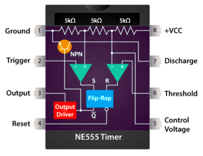
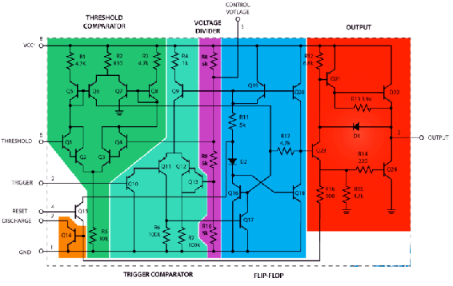
Represented with a block diagram it consists of 2 comparators, a flip-flop, a voltage divider, a discharge transistor and an output stage.
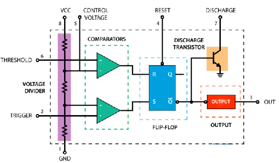
The voltage divider consists of three identical 5k resistors which create two reference voltages at 1/3 and 2/3 of the supplied voltage, which can range from 5 to 15V.
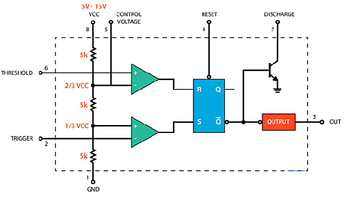
Next are the two comparators. A comparator is a circuit element that compares two analog input voltages at its positive (non-inverting) and negative (inverting) input terminal. If the input voltage at the positive terminal is higher than the input voltage at the negative terminal the comparator will output 1. Vice versa, if the voltage at the negative input terminal is higher than the voltage at the positive terminal, the comparator will output 0.
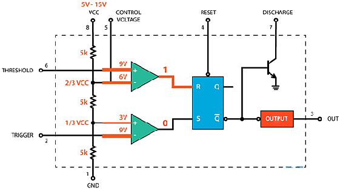
The first comparator negative input terminal is connected to the 2/3 reference voltage at the voltage divider and the external “control” pin, while the positive input terminal to the external “Threshold” pin.
On the other hand, the second comparator negative input terminal is connected to the “Trigger” pin, while the positive input terminal to the 1/3 reference voltage at the voltage divider.
So using the three pins, Trigger, Threshold and Control, we can control the output of the two comparators which are then fed to the R and S inputs of the flip-flop. The flip-flop will output 1 when R is 0 and S is 1, and vice versa, it will output 0 when R is 1 and S is 0. Additionally the flip-flop can be reset via the external pin called “Reset” which can override the two inputs, thus reset the entire timer at any time.
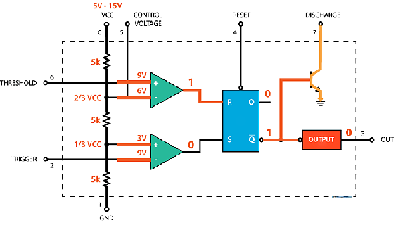
The Q-bar output of the flip-flip goes to the output stage or the output drivers which can either source or sink a current of 200mA to the load. The output of the flip-flip is also connected to a transistor that connects the “Discharge” pin to ground.
Experiments
1. Astable Multivibrator
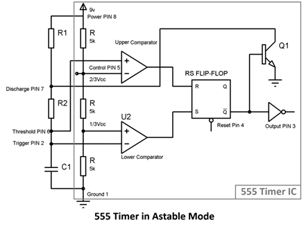
When initially power is turned ON, Trigger Pin voltage is below Vcc/3, that makes the lower comparator output HIGH and SETS the flip flop and output of the 555 chip is HIGH.
This makes the transistor Q1 OFF, because Q bar, Q’=0 is directly applied to base of transistor. As the transistor is OFF, capacitor C1 starts charging and when it gets charged to a voltage above than Vcc/3, then Lower comparator output becomes LOW (Upper comparator is also at LOW) and Flip flop output remains the same as previous (555 output remains HIGH).
Now when capacitor charging gets to voltage above than 2/3Vcc, then the voltage of non-inverting end (Threshold PIN 6) becomes higher than the inverting end of the comparator. This makes Upper comparator output HIGH and RESETs the Flip-flop; output of 555 chip becomes LOW.
As soon as the output of 555 get LOW means Q’=1, then transistor Q1 becomes ON and short the capacitor C1 to the Ground. So the capacitor C1 starts discharging to the ground through the Discharge PIN 7 and resistor R2.
As capacitor voltage get down below the 2/3 Vcc, upper comparator output becomes LOW, now SR Flip flop remains in the previous state as both the comparators are LOW.
While discharging, when capacitor voltage gets down below Vcc/3, this makes the Lower comparator output HIGH (upper comparator remain LOW) and Sets the flip flop again and 555 output becomes HIGH.
Transistor Q1 becomes OFF and again capacitor C1 starts charging.
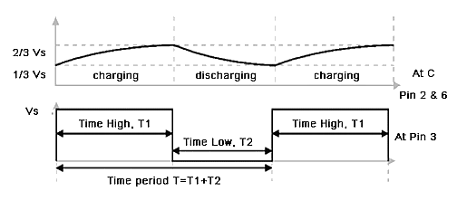
This charging and discharging of capacitor continues and a rectangular oscillating output wave for is generated. While capacitor is getting charge the output of 555 is HIGH, and while capacitor is getting discharge output will be LOW. So this is called Astable mode because none of the state is stable and 555 automatically interchange its state from HIGH to LOW and LOW to HIGH, so it is called Free running Multivibrator.
Now the OUTPUT HIGH and OUTPUT LOW duration, is determined by the Resistors R1 & R2 and capacitor C1. This can be calculated using below formulas:
Time High (Seconds) T1 = 0.693 * (R1+R2) * C1
Time Low (Seconds) T2 = 0.693 * R2 * C1
Time Period T = Time High + Time Low = 0.693 * (R1+2*R2) * C1
Frequency f = 1/Time Period = 1/ 0.693 * (R1+2*R2) * C1 = 1.44 / (R1+2*R2) * C1
Duty Cycle: Duty cycle is the ratio of time for which the output is HIGH to the total time.
Duty Cycle %: (Time HIGH/ Total time) * 100 = (T1/T) * 100 = (R1+R2)/ (R1+2*R2) *100
Here is the practical demonstration of the Astable mode of 555 timer IC, where we have connected a LED to the output of the 555 IC. In this 555 astable multivibrator circuit, LED will switch ON and OFF automatically with a particular duration. ON time, OFF time, Frequency etc can be calculated using above formulas.
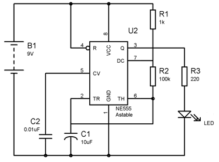
Parts:
- IC = 555
- LED = Light Emitting Diode
- R1 = 1k (brown black red gold)
- R2 = 100k (brown black yellow gold)
- R3 = 220E ( red red brown gold)
- C1 = 10µF electrolytic capacitor
- C2 = 0.01µF ceramic disc capacitor (10nF and EIA code is 103)
- B1 = 9V Battery
2. Gated Astable Multivibrator
In the circuit shown, you find out how the RESET input is connected.
With a small change to the circuit you can switch the astable multivibrator on and off. To do this you use the RESET input of the 555.
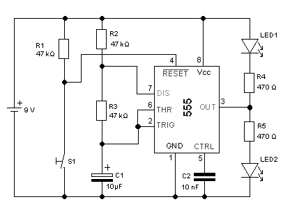
When you press the pushbutton switch S1, the LEDs LED1 and LED2 are flashing. When you let go of S1, the multivibrator stops and only LED1 is on. This is shown schematically in the illustration.
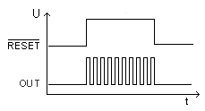
Parts:
- IC = 555
- LED1, LED2 = Light Emitting Diode
- R1, R2, R3= 47k (yellow violet orange gold)
- R4, R5 = 470E (yellow violet brown gold)
- C1 = 10µF electrolytic capacitor
- C2 = 0.01µF (10nF and EIA code is 103)
- S1 = Switch
- 9V Battery
3. Astable Multivibrator with Symmetric Switching Times
In the last experiments, you build an astable multivibrator. Thereby you surely have noticed the different switching times. Find out here how you build a symmetric astable multivibrator.
If you recall Experiment 15 you realize...
- The capacitor C1 is charged via the resistors R1 and R2.
- The capacitor C1 is discharged only via the resistor R2.
This has the consequence that LED2 is light longer than LED1.
Do you want nevertheless to build a symmetric astable multivibrator where LED2 and LED1 are light equally long; you have to introduce a diode in the circuit.
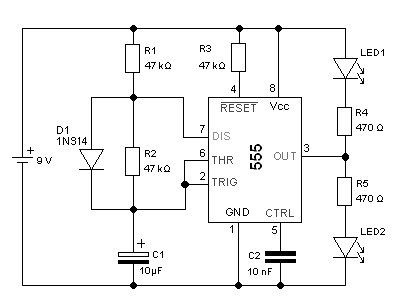
Note: this requires that the resistors R1 and R2 must be equal.
Parts:
- IC = 555
- D1 = 914 OR Equivalent
- LED1, LED2 = Light Emitting Diode
- R1, R2, R3= 47k (yellow violet orange gold)
- R4, R5 = 470E (yellow violet brown gold)
- C1 = 10µF electrolytic capacitor
- C2 = 0.01µF (10nF and EIA code is 103)
- 9V Battery
4. Astable Multivibrator with Adjustable Switching Times
In many applications, you need an astable multivibrator with adjustable switching times. Find out how you build an adjustable astable multivibrator.
Consider to the circuit shown. With the introduced potentiometers are you able of influencing the switching times.
- The capacitor C1 is charged via the potentiometer P1 and the diodeD1.
- The capacitor C1 is discharged via the potentiometer P2 and the diode D2.
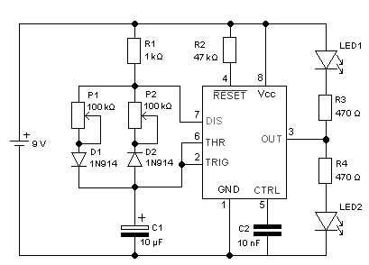
Parts:
- IC = 555
- LED1, LED2 = Light Emitting Diode
- D1, D2 = 1N914 OR Equivalent
- R1 = 1k (brown black red gold)
- R2 = 47k (yellow violet orange gold)
- R3, R4 = 470E (yellow violet brown gold)
- C1 = 10µF electrolytic capacitor
- C2 = 0.01µF (10nF and EIA code is 103)
- P1, P2 = Potentiometer 100k
- 9V Battery
5. Monostable Multivibrator
With a NE555 you can able to build a monostable multivibrator monoflop or one-shot. Find out how here, and what you need to be aware of.
Once you push the pushbutton switch S1, the LED2 lights up. After a switching time T of approximately 2.5 seconds, LED2 goes out and LED1 lights up again.
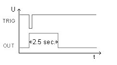
In fact, you can calculate the approximate switching time T...
T = 1.1 × R2C1
= 1.1 × 22,000 Ω × 0.0001 F = 2.4 sec
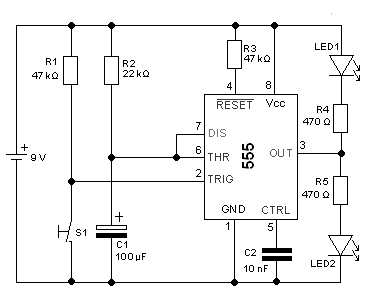
Parts:
- IC = 555
- LED1, LED2 = Light Emitting Diode
- R1, R3 = 47k (yellow violet orange gold)
- R2 = 22k (red red orange gold)
- R4, R5 = 470E (yellow violet brown gold)
- C1 = 100µF electrolytic capacitor
- C2 = 0.01µF (10nF and EIA code is 103)
- S1 = Switch
- 9V Battery
6. The Retriggerable Monostable
Often you need a retriggerable monoflop in applications. Just think of a motion detectors that turn the lights out in the parking a few minutes after the last movement.
To accomplish this, you introduce the diode D1 to your circuit.
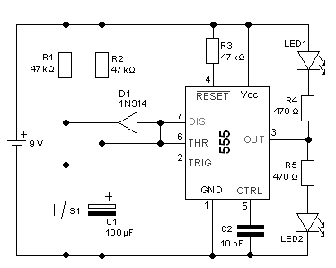
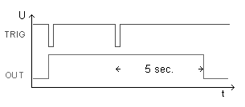
Each time that you press the pushbutton switch S1, the capacitor C1 is connected through the diode to GND and is discharged. The switching time restarts. This behavior is called retriggerable.
Parts:
- IC = 555
- LED1, LED2 = Light Emitting Diode
- D1 = 914 OR equivalent
- R1, R2, R3 = 47k (yellow violet orange gold)
- R4, R5 = 470E (yellow violet brown gold)
- C1 = 100µF electrolytic capacitor
- C2 = 0.01µF (10nF and EIA code is 103)
- S1 = Switch
- 9V Battery
7. Non-Retriggerable Monostable
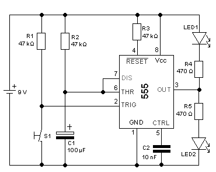
Consider the circuit shown. You have replaced the resistor R2, and the circuit now has a switching time of about 5 sec, as you can easily calculate...
T = 1.1 × R2C1
= 1.1 × 47,000 Ω × 0.0001 F = 5.2 sec
But what happens if you press the pushbutton switch again after about 4 sec?
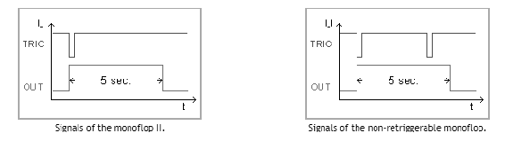
Nothing. You cannot influence the switching time. The monoflop switches about 5 seconds after the first signal back to the ground state (OUT = LOW).
This behaviour is known as non-retriggerable.
Parts:
- IC = 555
- LED1, LED2 = Light Emitting Diode
- R1, R2, R3 = 47k (yellow violet orange gold)
- R4, R5 = 470E (yellow violet brown gold)
- C1 = 100µF electrolytic capacitor
- C2 = 0.01µF (10nF and EIA code is 103)
- S1 = Switch
- 9V Battery
8. Bistable Multivibrator (RS Latch)
Can you use the NE555 as a bistable multivibrator or RS latch. Find out how.
Consider the circuit shown. To obtain the functionality of a RS latch with a NE555, the truth table needs to be adapted.
With this you realize a classic RS latch with the NE555.
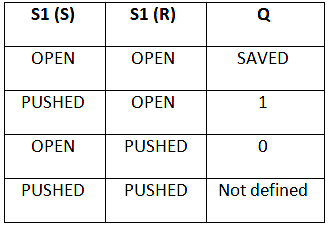
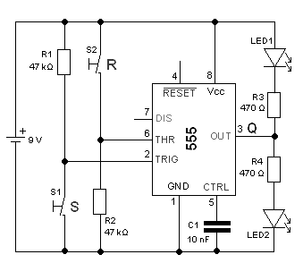
The question remains, why should you use a NE555 as a RS latch? An important argument is the maximum load of the output OUT with 200mA. Comparable logical components such as CMOS 4027 can only be loaded with roughly 20mA.
The NE555 as a RS latch is therefore found in control systems (e.g., elevator control).
Parts:
- IC = 555
- LED1, LED2 = Light Emitting Diode
- R1, R2 = 47k (yellow violet orange gold)
- R3, R4 = 470E (yellow violet brown gold)
- C1 = 0.01µF (10nF and EIA code is 103)
- S1, S2 = Switch
- 9V Battery
9. Measuring Control Reference Voltage
How do you connect the NE555? Find out what the CONTROL output does.
From the internal circuit diagram of the NE555 you can see that the output pin 5 (CTRL) is directly connected to the point A.
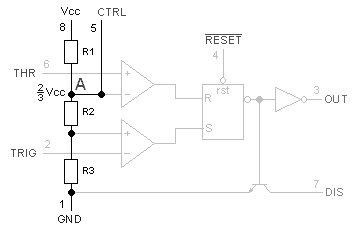
Measuring the voltage between Pin 5 (CTRL) and Pin 1 (GND), shows you indeed V = 6 V on your multimeter, or rather 2/3 Vcc.
This voltage is referred to as the reference voltage of the NE555.
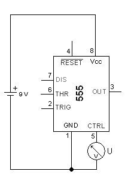
In almost all practical circuits the CTRL output is connected to GND using a capacitor. This serves to stabilize the reference voltage and to filter out spikes.
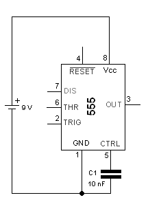
Parts:
- IC = 555
- C1 = 0.01µF (10nF and EIA code is 103)
- 9V battery
- Multimeter
10. Method of Connecting the State of the Output
How do you connect the NE555? Find out how to connect OUTPUT. The OUT-output of the NE555 is on pin 3. It can only take up two states.
OUT = LOW-Level (here 0 V) and OUT = HIGH-Level (here 9 V)
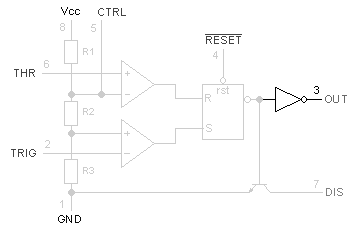
In the circuit you use two LEDs (LED1 and LED2), to indicate the state of the output.
OUT = LOW: LED1 is on and OUT = HIGH: LED2 is on
When you connect the battery and start to use circuit, the NE555 is always in the state OUT = LOW (LED1 is on).
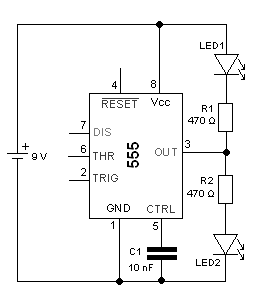
Parts:
- IC = 555
- LED1, LED2 = Light Emitting Diode
- R1, R2 = 470E
- C1 = 10nF
- 9V Battery
11. Controlling State of the Output with Trigger Input
How do you connect the NE555? Find out how you control the state of the output with the TRIGGER input.
From the internal circuit diagram of the NE555 you can see that the TRIGGER input Pin 2 (TRIG) is connected to a comparator. The second input of the comparator is connected to the voltage divider, at which the voltage V = 1/3Vcc = 3 V applies. The output of the comparator is connected to the SET input of the RS latch.
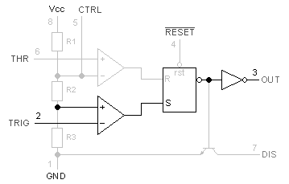
Now consider the circuit shown
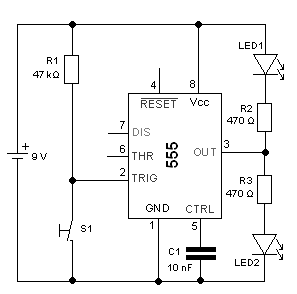
As soon as you push the pushbutton switch S1
- At the TRIG input the voltage is pulled down to GND, which is less than
V = 1/3 Vcc = 3 V ,
- therefore the output of the comparator goes to HIGH
- thus the RS latch gets a SET and switches,
- And the output OUT goes to HIGH. LED2 goes on.
But how can you switch the NE555 back again?
Parts:
- IC = 555
- LED1, LED2 = Light Emitting Diode
- R1 = 47k (yellow violet orange gold)
- R2, R3 = 470E (yellow violet brown gold)
- C1 = 0.01µF (10nF and EIA code is 103)
- S1 = Switch
- 9V Battery
12. Reset the State of the Output with the Threshold Input
How do you connect the NE555? Find out how you reset the state of the output with the THRESHOLD input.
From the internal circuit diagram of the NE555 you can see that the THRESHOLD input Pin 6 (THR) is connected to a comparator. The second input of the comparator is connected to the voltage divider, at which the voltage V = 2/3 Vcc = 6 V applies. The output of the comparator is connected to the RESET input of the RS latch.
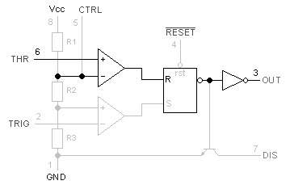
Now consider the circuit shown
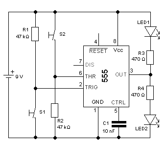
As soon as you push the pushbutton switch S2...
- At the THR input a voltage of Vcc is applied, which is greater than
V = 2/3 Vcc = 6 V ,
- therefore the output of the comparator goes to HIGH
- thus the RS latch gets a RESET and resets the latch,
- And the output OUT goes to LOW. LED1 goes back on.
Parts:
- IC = 555
- LED1, LED2 = Light Emitting Diode
- R1, R2 = 47k (yellow violet orange gold)
- R3, R4 = 470E (yellow violet brown gold)
- C1 = 0.01µF (10nF and EIA code is 103)
- S1, S2 = Switch
- 9V Battery
13. Reset the State of the Output with the Reset Input
How do you connect the NE555? Find out how you reset the state of the output with the RESET input.
From the internal circuit diagram of the NE555 you can see that the RESET input, Pin 4, is connected directly with the RS latch. Now you have the opportunity to reset the NE555.
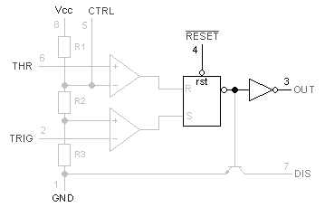
Now consider the circuit shown
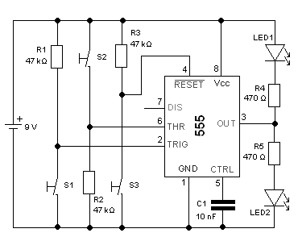
As soon as you push the pushbutton switch S3...
- At the RESET input a voltage of 0 V applies,
- thus the latch is forcefully reset,
- And the output OUT is pulled down to LOW. LED1 goes on.
As long as you keep S3 pressed, OUT stays on LOW.
Parts:
- IC = 555
- LED1, LED2 = Light Emitting Diode
- R1, R2, R3 = 47k (yellow violet orange gold)
- R4, R5 = 470E (yellow violet brown gold)
- C1 = 0.01µF (10nF and EIA code is 103)
- S1, S2, S3 = Switch
- 9V Battery
14. Discharge Output Experiment 1
How do you connect the NE555? Find out how you use the DISCHARGE output of the NE555.
From the internal circuit diagram of the NE555 you can see that the DISCHARGE output, Pin 7, is connected to the collector of a transistor. The base of the transistor is connected to the output of the RS latch.
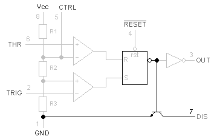
The transistor is always switched through when the OUT output is LOW.

That you can now easily measure with an ohmmeter
- If OUT = LOW, the transistor switches through and the resistance drops to near zero.
- If OUT = HIGH, the transistor blocks and the resistance goes to a very high value.
Parts:
- IC = 555
- LED1, LED2 = Light Emitting Diode
- R1, R2, R3 = 47k (yellow violet orange gold)
- R4, R5 = 470E (yellow violet brown gold)
- C1 = 0.01µF (10nF and EIA code is 103)
- S1, S2, S3 = Switch
- 9V Battery
- Multimeter
15. Discharge Output Experiment 2
But how do you use the DISCHARGE output? Find out how you produce a time-dependent signal, as only the DISCHARGE output makes the NE555 a timer.
Consider to the circuit shown. You replace the key switch that controls the THRESHOLD input, by the capacitor C1. Simultaneously, the capacitor is also connected to the DISCHARGE output.
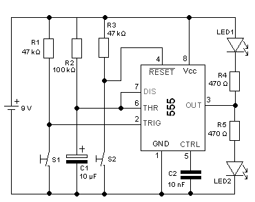
Once you push the pushbutton switch S1, the LED2 lights up. After approximately one second the NE555 switches back independently. The LED1 lights up again. How does this happen? As soon as you push the pushbutton switch S1...
- OUT goes to HIGH.
- DISCHARGE becomes high impedance, C1 charges up via the resistor R2.
- When across C1 the voltage reaches V = 2/3 Vcc, the THRESHOLD switches OUT to LOW.
- DISCHARGE becomes low impedance, C1 discharges.
This is the basic circuit of a monostable multivibrator or monoflop using a NE555.
Parts:
- IC = 555
- LED1, LED2 = Light Emitting Diode
- R1, R2, R3 = 47k (yellow violet orange gold)
- R4, R5 = 470E (yellow violet brown gold)
- C1 = 10µF electrolytic capacitor
- C2 = 0.01µF (10nF and EIA code is 103)
- S1, S2 = Switch
- 9V Battery
16. Discharge Output Experiment 3
There is yet another way to use the DISCHARGE output. However, this changes the behaviour of the circuit.
Consider to the circuit shown
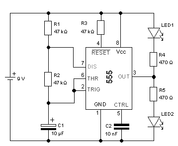
When you take the circuit into operation, the LEDs light up alternately. Thereby LED2 lights up about twice as long as LED1.
How does this happen? As soon as you connect the battery
- OUT goes to HIGH.
- DISCHARGE becomes high impedance, C1 charges via the resistors R1 and R2.
- When across C1 the voltage reaches V = 2/3 Vcc, the THRESHOLD switches OUT to LOW.
- DISCHARGE becomes low impedance, C1 discharges.
- When across C1 the voltage reaches V = 1/3 Vcc the TRIGGER switches OUT to HIGH.
- The cycle begins again.
Parts:
- IC = 555
- LED1, LED2 = Light Emitting Diode
- R1, R2, R3 = 47k (yellow violet orange gold)
- R4, R5 = 470E (yellow violet brown gold)
- C1 = electrolytic capacitor
- C2 = 0.01µF (10nF and EIA code is 103)
- 9V Battery
17. Schmitt Trigger
Schmitt Triggers have a convention to show a gate that is also a Schmitt Trigger, shown below:
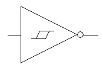
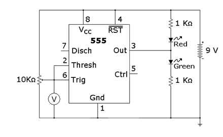
The same schematic redrawn to reflect this convention looks something like this:
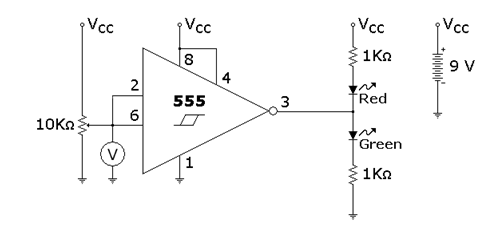
The defining characteristic of any Schmitt Trigger is its hysteresis. In this case it is 1/3 and 2/3 of the power supply voltage, defined by the built in resistor voltage divider on the 555. The built in comparators C1 and C2 compare the input voltage to the references provided by the voltage divider and use the comparison to trip the built in flip flop, which drives the output driver, another nice feature of the 555. The 555 can drive up to 200ma off either side of the power supply rail; the output driver creates a very low conduction path to either side of the power supply connections. The circuit "shorts" each side of the LED circuit, leaving the other side to light up.
The 5KΩ resistors are not very accurate. It is interesting to note that IC fabrication doesn't generally allow precision resistors, but the resistors compared to each other are extremely close in value, which is critical to the circuit's operation.
Operation Instructions
The 555 timer is probably one of the more versatile "black box" chips. Its 3 resistor voltage divider, 2 comparators, and built in set reset flip flop are wired to form a Schmitt Trigger in this design. It’s interesting to note that the configuration isn’t even close to the op amp configuration shown elsewhere, but the end result is identical.
Try adjusting the potentiometer until the lights flip states, then measure the voltage. Compare this voltage to the power supply voltage. Adjust the potentiometer the other way until the LED’s flip states again, and measure the voltage. How close to the 1/3 and 2/3 marks did you get?
Try substituting the 9V battery with a 6 volt battery, or two 6 volt batteries, and see how close the thresholds are to the 1/3 and 2/3 marks.
Schmitt Triggers are a fundamental circuit with several uses. One is signal processing, they can pull digital data out of some extremely noisy environments. Other big uses will be shown in following projects, such as an extremely simple RC oscillator.
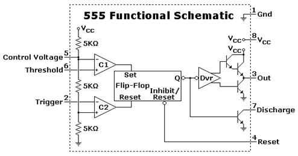
Parts:
- IC = 555
- Two LEDs = Red and Green Light Emitting Diodes
- Two Resistors = 1k (brown black red gold)
- Potentiometer = 10k (brown black orange gold)
- 9V Battery
- Multimeter
18. Frequency Divider
Frequency divider circuits are takes important place in digital logic circuits and some analog multiplex circuits, making perfect frequency divider is quite complex thing, by using timer IC 555 and decade counter IC CD4017 we can create simple and easy to construct frequency divider circuit.
We know frequency dividers makes any input frequency f divided by n integer value (f / n), the following circuit takes input frequency f and gives output frequency as (f / 2), (f / 4) and (f / 6). Here timer IC used to generate square pulse signal and it can be tuned to different frequency by variable resistor. Exact divided frequency output is taken from decade counter Q1 pin.
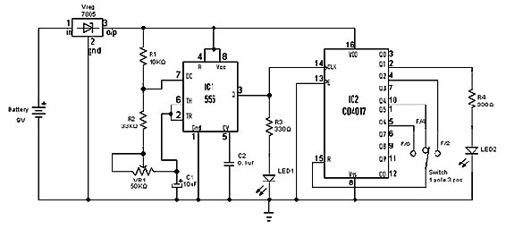
This frequency divider circuit made by two sections one is input frequency generator and another one is decade counter/divider circuit. IC 555 is configured as astable multivibrator, timing resistor (R1, R2) and variable resistor VR1 are connected with timing capacitor C1, discharge pin7 is connected between R1 and R2 then threshold pin6 and trigger pin2 are connected between VR1 and C1. 5V Vcc applied to the bias pin8 and reset pin 4, here control voltage pin5 is connected to ground through 0.1 µF C2 capacitor. Output pin 3 is connected with clock pin of decade counter IC and LED1, this LED indicates the input frequency.
IC 4017 takes input clock at pin 14 and provides decade output from Q0 to Q9. To convert this into frequency divider we have taken output from Pin 2 and connected with LED2 through R4, this will visually indicate the output frequency through blinking. Active low enable pin 13 is grounded and Reset pin 15 is connected with three way switch towards Q2 for F/2 output selection, Q4 for F/4 output selection and Q6 for F/6 output selection. When we use oscilloscope at output pin 2 we can obtain divided output frequency.
Output Waveform
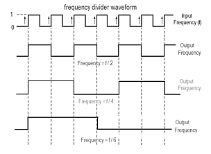
First signal represents input frequency (f) and output frequency (f/2), (f/4) and (f/6) are shows the divided frequency results.
Parts:
- IC1 = 555
- IC2 = CD4017
- Vreg = 5 Volts Voltage Regulator 7805
- LED1, LED2 = Light Emitting Diode
- R1 = 10k (brown black orange gold)
- R2 = 33k (orange orange orange gold)
- R3, R4 = 330E (orange orange brown gold)
- C1 = 10µF electrolytic capacitor
- C2 = 0.1µF (EIA code 104)
- S1 = 3-way 1 pole Switch
- VR1 = 50k/47k potentiometer
- 9V Battery
19. Constant PWM (Pulse Width Modulation) Generator
PWM (Pulse Width Modulation) is a important feature of today’s every microcontroller due to its requirement for controlling many devices in every field of Electronics almost. PWM is widely used for motor controlling, lighting controlling etc. Sometime we do not use microcontroller in our applications and if we need to generate PWM without microcontroller then we prefer some general purpose ICs like op-amp, timers, pulse generators etc. Here we are using a 555 timer IC for generating PWM. 555 Timer IC is a very useful and general purpose IC which can be used in many applications.
Pulse Width Modulation (PWM) is a digital signal which is most commonly used in control circuitry. This signal is set high (5v) and low (0v) in a predefined time and speed. The time during which the signal stays high is called the “on time” and the time during which the signal stays low is called the “off time”. There are two important parameters for a PWM as discussed below:
Duty cycle of the PWM:
The percentage of time in which the PWM signal remains HIGH (on time) is called as duty cycle. If the signal is always ON it is in 100% duty cycle and if it is always off it is 0% duty cycle.
Duty Cycle =Turn ON time/ (Turn ON time + Turn OFF time)
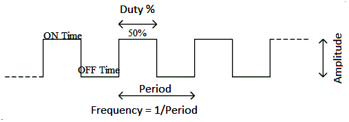
Frequency of a PWM
The frequency of a PWM signal determines how fast a PWM completes one period. One Period is complete ON and OFF of a PWM signal as shown in the above figure.
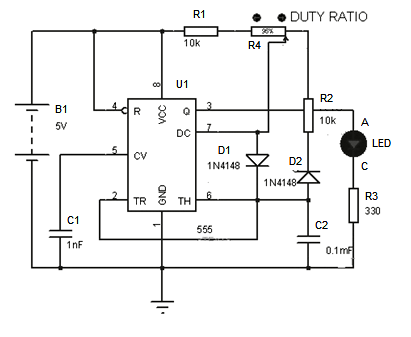
It is possible to maintain a constant frequency with variable duty cycle. The TON and TOFF durations are individually controlled by placing the bypass diodes. As the Pot type variable resistor is used, the frequency is maintained constant because the total resistance Ra + Rb is constant even if individual portions are varied.
Parts:
- IC = 555
- LED = Light Emitting Diode
- D1, D2 = 1N4148
- R1, R2 = 10k (brown black orange gold)
- R3 = 330E (orange orange brown gold)
- R4 = 20K Potentiometer
- C1 = 0.001µF (1nF and EIA code is 102)
- C2 = 0.1µF (100nF and EIA code is 104)
- 9V Battery
20. Variable PWM (Pulse Width Modulation) Generator
Frequency can be varied along with the duty ratio. As this resistor is involved in both charging and discharging periods, this does not affect the duty ratio.
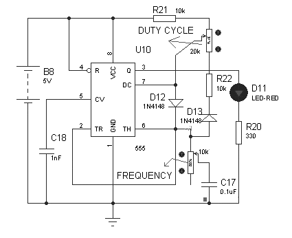
This circuit can be used for speed control of motors, brightness control of lights etc., even if the specific frequency for proper operation is not known as in the case of dc fans or dc motors. It can be set by trial and error. The minimum time period of the waveform depends on the duty cycle potentiometer and maximum time period depends on the frequency potentiometer. Variable resistors should not be in their extreme positions or use fixed resistors in addition to a potentiometer to avoid this.
Parts:
- IC = 555
- LED = Light Emitting Diode
- D1, D2 = 1N4148
- R1, R2 = 10k (brown black orange gold)
- R3 = 330E (orange orange brown gold)
- R4 = 20K Potentiometer
- C1 = 0.001µF (1nF and EIA code is 102)
- C2 = 0.1µF (100nF and EIA code is 104)
- 9V Battery
21. Voltage Controlled Oscillator (VCO) PLL
Pin 5 is the control voltage pin. To this pin, we connect a potentiometer to. One end of the potentiometer is connected to positive voltage and the other end is connected to ground. By varying the potentiometer resistance, we change the voltage input into this pin. The voltage can reach a maximum value of +9V when the potentiometer is turned all the way to one end where it offers full resistance. And the voltage reaches a minimum value of near 0V when the potentiometer is turned all the way to the other end where it offers near 0Ω of resistance.

You can do it this way. Another way you can do it is by simply connecting a DC power supply to pin 5 and adjusting the voltage. It doesn't really matter.
Either method you use you should connect a capacitor in parallel to this DC source of power. The capacitor serves to clean up noise from the DC power source so that the output square wave signal produced by the 555 timer isn't as noisy. A capacitor cleans up significant noise and makes the square wave more clean or pure.
This VCO offers a wide range of frequencies.
When the voltage is high, the frequency is low. As we decrease the voltage to the control voltage pin, the frequency increases.
Additionally, if you want to increase the frequency of the output signal, you can decrease either the resistor or capacitor in the RC network. So, for example, you can change the 33KΩ with a 10KΩ resistor. This will significantly increase the resistance. If you want to decrease the frequency of the signal, you can either increase the resistor or capacitor value in the RC network. So, for example, you can change the 33KΩ resistor to a 100KΩ resistor.
And this is how a voltage controlled oscillator works with a 555 timer chip.
Parts:
- IC = 555
- R1 = 33k 33k (orange orange orange gold)
- C1 = 0.001µF (1nF and EIA code is 102)
- C2 = 0.1µF (100nF and EIA code is 104)
- Potentiometer = 47k
- 9V Battery
22. PPM (Pulse Position Modulation)
The circuit is designed in such a way that the PWM waveform generated by the first 555 is used as an input to the second 555 to obtain the PPM wave form, which is again working as a monostable multivibrator, with a fixed pulse width. Here the negative spikes are separated and given to pin 2 of 555 timer and the positive spikes are bypassed by the diode.
Pulse Width modulation (PWM) Circuit
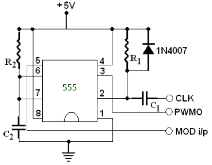
Figure above shows the circuit with a 555 timer working in a monostable mode. The R1C1 network acts as a differentiator to provide the triggering pulse for the monostable multivibrator. The clock pulse is differentiated by R1C1 network, positive half is bypassed by the diode and negative spikes is introduced at pin 2 of the 555. When no modulating input is given output is a periodic train of pulses of width 1.1R2C2 and frequency same as the clock input. When the modulating signal is applied, the charging time of the capacitor varies as it charges to (2/3VCC+ Vmod ), where Vmod is the modulating voltage magnitude, which can be either positive or negative; which results in variation of pulse width of output signal.
For a width of monostable pulse when no modulating signal is applied=0.2 mS
T=1.1R2C2
For C2=0.01μF; R2=18.2KΩ
For the differentiator circuit
R1C1 ≤ 0.0016/fclk
for fclk = 2KHz and C1 = 0.001μF;
R1 = 820Ω
Pulse Position Modulation (PPM) Circuit

The PPM circuit is designed in such a way that the PWM waveform generated by the first 555 is used as an input to the second 555 to obtain the PPM wave form, which is again working as a monostable multivibrator, but this time, with a fixed pulse width. Here too, the negative spikes are separated and given to pin 2 of 555 timer and the positive spikes are
bypassed by the diode. The pulse width of second 555 timer is taken as a small value of 1.1R2'C2'. As the negative spikes of the differentiated PWM signal is position modulated, capacitor C2 ' charges at a constant rate, but as the instance of charging changes in accordance with the instant of triggering, the output is pulse position modulated.
Second stage monostable multivibrator
Differentiator : R1'=R1 and C1'=C1
For a pulse width of 0.05mS
T1=1.1 R2'C2'
For C2'=0.001μF; R2'=45.4KΩ
23. PAM (Pulse Amplitude Modulation)
To generate PAM with one NPN transistor connected at output. The chip is configured in astable mode to generate pulse train to get samples of information (audio) signal. Its frequency should be at least twice that of audio signal. Usually it is 8 KHz (because audio signal is up to 3.4 KHz) but for better quality here I am keeping it 32 KHz. This pulse train output is fed to base of NPN transistor. The collector of transistor is coupled with low frequency audio (information) signal through positive clamper made up of capacitor C1 and diode D1. The positive clamper will shift the level of audio signal above 0 V. The output at the collector of transistor is PAM wave. The amplitude of pulses generated by IC555 varies in accordance with the instantaneous amplitude of information signal.
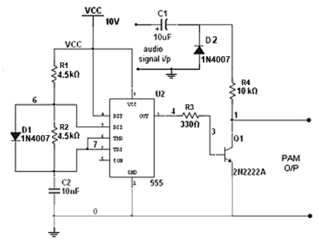
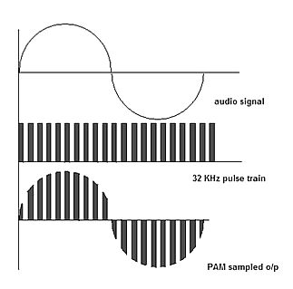
Parts:
- IC = 555
- Q1 = 2N222A transistor
- D1, D2 = 1N4007 diodes
- R1, R2 = 4.5k (yellow green red gold)
- R3 = 330E (orange orange brown gold)
- R4 = 10k (brown black orange gold)
- C1 = 10µF electrolytic capacitor
- C2 = 0.01µF (10nF and EIA code is 103) ceramic disc capacitor
- DC power supply 10V
24. FSK (Frequency Shift Keying)
The astable multivibrator with selective frequency input gives FSK Frequency Shift Keying. We may manually change the frequency through a potentiometer, but if it has to be changed by a digital signal, this circuit can be used. By inserting a resistance in parallel to the existing timing resistors, the time period can be varied. This is done with the help of a transistor.
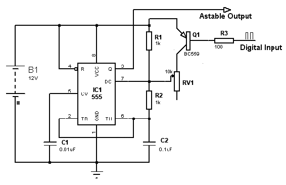
This is not limited to a single parallel path; we can increase as many parallel resistors as required, provided there are enough inputs.
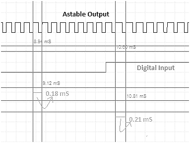
Parts:
- IC1 = 555
- Q1 = BC559
- R1, R2 = 1k (brown black red gold)
- R3 = 100E (brown black brown)
- RV1 = 10k potentiometer
- C1 = 0.01µF (10nF and EIA code is 103) ceramic disc capacitor
- C2 = 0.1µF (100nF and EIA code is 104) ceramic disc capacitor
- B1 = DC powr supply/battery 12V
25. ASK (Amplitude Shift Keying) Generation
ASK means Amplitude Shift Keying (also known as ON-OFF keying). It’s one of the Modulation Scheme used to transmit Digital Data using High Frequency carrier signal. It’s very simple and popular method. It transmits 1’s and 0’s of Digital Data by transmitting carrier or no carrier like
- Bit 1 (logic high) is Transmitted with carrier frequency Fc
- Bit 0 (logic low) is Transmitted with no carrier
Means series of bits – bit stream is transmitted as carrier ON and carrier OFF. That’s why it is also known as ON-OFF keying.
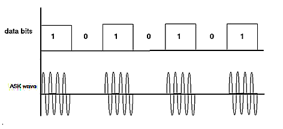
The first Waveform is bit pattern – data bits. 2nd Waveform shows ASK Modulation – for data bit 1 carrier signal (with frequency Fc) present but for data bit 0 there is no carrier signal. Usually carrier frequencies are higher than (100s of KHz) data rate. So in Single bit period several cycles of carrier are transmitted.
Here given Circuit demonstrates how ASK Modulated wave can be generated. The Circuit is build using IC555. The bit stream can be given as input, and as an output IC555 generates ASK Wave. In this experiment instead of bit-stream, Square pulses are applied as input that can represent Logic High and Logic Low as bit 1 and bit 0. To generate Square pulses one more IC555 is used.
There are two sections in the circuit
- ASK Modulator
- KHz Pulse Generator
Pulse Generator
IC555 is connected in Astable mode. It will generate continuous pulses at 1 KHz frequency. The frequency is determined by RC components R4, R5 and C3 as
F = 1.44 / (R4 + 2×R5) × C3
This 1 KHz pulse output is connected to reset pin (4) input of 2nd IC555 that works as ASK Modulator.
ASK Modulator
As shown in figure IC 555 is configured as Astable Multi vibrator. When its reset pin is high it generates continuous Square pulses with frequency
F = 1.44 / (R1 +2×R2) × C1
And when its reset pin is low its output is also low. The values of R1, R2 and C1 are selected as to get desire carrier frequency. The carrier frequency is selected as 100 KHz. Let us see how values of R1, R2 and C1 are calculated.
Circuit Designing
Assume C1 = 1 nF = 1 × 10-9 F
Substituting this value in to above equation
F = 1.44 / (R1 + 2×R2) × 10-9
Because desired frequency is 100 KHz
100 × 103 = 1.44 / (R1 + 2×R2) × 10-9
R1 + 2×R2 = 1.44 /( 105 × 10-9)
R1 + 2×R2 = 14400
Now to get around 50% duty cycle R2 > R1, so let us take R1 = 3.3 K.
So 2×R2 = 14400-3300 = 11100
So R2 = 5550 = 5.5 K
The nearest practical value can be 5.6 K.
Thus finally R1 = 3.3 K, R2 = 5.6 K and C1 = 1 nF. Instead of selecting fixed value of R1, a Potentiometer is used to tune the frequency and get exact value of 100 KHz.
Similarly we can determine values of R3, R4 and C3 to generate 1 KHz frequency. To find out these values start with assuming C1 = 0.1 µF. So from equation
F = 1.44 / (R4 + 2×R5) × C3
1000 = 1.44 / (R4 + 2×R5) × 10-7
(R4 + 2×R5) = 1.44 /( 103 × 10-7)
(R4 + 2×R5) = 14400
Again we can select same R4 and R5 values as 3.3 K and 5.6 K respectively. And to get exact 1 KHz frequency we can use Potentiometer instead of fix value resistor for R4.
Apply 5 V to the Circuit through power supply and connect output of Pulse Generator and ASK Modulator to both the channels of DSO (or CRO) using CRO probes.
1 KHz pulse input is given to reset pin 4 of IC555. When reset pin is given low logic the internal flip flop resets and IC555 gives low output. When reset pin is high IC555 works normal and generates Square Wave of Frequency determined by RC components in the output. So when bit 1 or logic high is given as input to reset pin a 100 KHz carrier is generated in the output and when bit 0 or logic low is given IC555 gives low output as requirement of ASK Modulated output.
Parts:
- 2x IC = 555
- R2, R4 = 5.6k (green blue red gold)
- R2, R4 = 4.7k potentiometer
- C1 = 0.001µF (1nF and EIA code is 102) ceramic disc capacitor
- C2, C3, C4 = 0.1µF (100nF and EIA code is 104) ceramic disc capacitor
- DC power supply 5V
26. FM (Frequency Modulation) Generation/ Modulator -1
In communication systems, Frequency Modulation (FM) is the process in which information (message signal) is transmitted over a carrier wave by varying its instantaneous frequency. The difference between instantaneous frequency and central frequency of the carrier will be directly proportional to the instantaneous value of the amplitude of message signal. 555 Timer wired in Astable Mode can be used for generating Frequency Modulated (FM) waves. Please read the article Astable Multivibrator using 555 Timer for more details about the circuit. In astable multivibrator we don’t use the 5th (Control Voltage) pin of 555 but here we fed the message signal to this pin which results in the variation of frequency.
8th and 1st pin of the 555 are used for giving power, Vcc and GND respectively. 4th pin is the Reset pin which is a active low input, since it is tied to Vcc. When the output is high, capacitor C1 charges to Vcc through R1 and D. When the output is low, capacitor discharges through resistor R2 and 7th of the IC. This charging and discharging time periods determines the time period of output. Message signal is fed to 5th(Control Voltage) pin of the IC through a coupling capacitor and the output can be taken from the 3ed pin of the IC.
Central frequency or Carrier frequency of the generated FM can be determined from the expression, fo = 1/(0.693RC), where R = R1 = R2 and C = C1.
When an input voltage (say V) is given to Control Voltage pin, the upper and lower comparator reference changes to voltages V and V/2. So when the capacitor voltage becomes less than V/2, output becomes high and the capacitor starts charging to Vcc through resistor R1 and diode D. When the capacitor voltage becomes greater than V, output becomes low and the capacitor starts discharging through resistor R2 and 7th pin of the IC. So the time period is proportional to the input voltage V. So as V increases, time period of the output wave increases and when V decreases time period of the output wave decreases.
- fo = 1/(0.693RC), where R = R1 = R2 and C = C1
- Coupling capacitor C3 is designed in such a way that it can couple the input message signal.
You can use our 555 Astable Multivibrator Calculator in the bottom of the article Astable Multivibrator using 555 Timer for easy calculations.
Parts:
- IC = 555
- D = 1N4007 diode
- R1, R2 = 1.5k (brown green red gold)
- R3 = 10k (brown black orange gold)
- C1 = 0.1µF (100nF and EIA code is 104) ceramic disc capacitor
- C2 = 10µF electrolytic capacitor
- DC power supply 5V
27. FM (Frequency Modulation) Generation/ Modulator -2
The 555 is wired as a normal astable mutivibrator with constant on-off time period. The only difference in this modulator circuit is that the pin number 5 is not connected to the positive via a capacitor, but it is used to receive the modulating signal. The circuit diagram of the 555 modulator is given in the following diagram:

The pin number 4, which is the reset pin, is connected to the VCC. The pin 2 which is the trigger pin and the pin 6 which is the threshold pin is shorted together and a capacitor is connected across this point and the ground. This capacitor charges towards VCC through the diode ‘D’ and the resistor ‘R1’ and discharges from the pin 7 through the resistor ‘R2’. The charging time depends on the value of the capacitor and the value of the resistor ‘R1’ and the discharging time depends on the value of the capacitor and the value of the resistor ‘R2’. The on-off time period of the output pulse depends on the charging and the discharging time of the capacitor. Since in this circuit the R1 and R2 has the same value the charging and discharging time is same and also the on-off time period of the output pulse are same.
The frequency of the pulses generated by the above circuit can be calculated using the following equation:
F = 1.44 / ( ( R1 + R2 ) * C1 )
Applying the value of R1 = R2 = 1K and C1 = 0.1uF, the frequency can be calculated as 7.2 KHz.
Recollect that the frequency of the pure sine is 1 KHz and it is now modulated with a varying frequency pulses which have a centre frequency around 7 KHz. The range in which the frequency varies depends on the amplitude of the input signal. The only 1M ohms potentiometer in the circuit is used to adjust the amplitude of the entire input signal fed into the 555 and hence by adjusting the potentiometer one can adjust the range at which the frequency of the pulses varies for the input from a particular circuit or device.
As the amplitude variations occurs in the sine wave the frequency generated by the 555 changes and hence a frequency modulated wave is obtained at the output of the 555 IC. As the amplitude increase the frequency decreases and vice versa. For large amplitude signals the frequency variation will be large and for small amplitude signals the frequency variations will be small. The amplitude of the sine wave signal applied to the 555 modulator can be varied by varying the 1M ohm potentiometer.
Parts:
- IC = 555
- D = 1N4148 diode
- R1, R2 = 1k (brown black red gold)
- C1 = 0.1µF (100nF and EIA code is 104) ceramic disc capacitor
- Cin = 1µF electrolytic capacitor
- DC power supply 5V
Projects
1. AM (Amplitude Modulation) Transmitter
This is a simple low range radio transmitter for transmission up to 25 metres. It is basically an AM modulator whose signal can be received on the normal AM radio. It can also be used as an AM radio tester.
IC 555 (IC1) is used as a free running multivibrator whose frequency is set above 540 kHz. Here the circuit is designed for a frequency of around 600 kHz. The frequency of the multivibrator can be calculated as follows:
f=1.443(R1+2R2) C1
Where resistors R1 and R2 are in ohms, capacitor C1 is in microfarads, and frequency f is in hertz. This frequency can be changed by simply replacing R2 with a variable resistor or C1 with gang capacitors. But it may increase the complexity of the circuit. A condenser microphone is used for speaking.
The IC 555 multivibrator is used as a voltage-to-frequency converter. The output of the condenser microphone is given to pin 5 of IC1, which converts the input voltage or voice signal into its appropriate frequency at output pin 3. This frequency produces an electromagnetic wave, which can be detected by a nearby radio receiver, and you can hear your own voice in that radio. Note that the receiver should be AM type. If there is no noise in receiver, tune it to 600 kHz.
The circuit operates off a 9V regulated power supply or a 9V battery. For antenna, connect 2-3m long wire at pin 3.
Parts:
- IC = 555
- R1 = 390E (orange white brown gold)
- R2 = 1k (brown black red gold)
- C1 = 0.001µF (1nF and EIA code is 102) ceramic disc capacitor
- C2 = 1000µF electrolytic capacitor
- Condenser Mic
- Antnna
- 9V Battry
2. Light Detector
The Light Detector circuit detects light falling on the Photo-cell (Light Dependent Resistor) to turn on the 555. Pin 4 must be held below 0.7v to turn the 555 off. Any voltage above 0.7v will activate the circuit. The adjustable sensitivity control is need to set the level at which the circuit is activated. When the sensitivity pot is turned so that it has the lowest resistance (as shown in red), a large amount of light must be detected by the LDR so that its resistance is low. This produces a voltage-divider made up of the LDR and 4k7 resistor. As the resistance of the LDR decreases,
the voltage across the 4k7 increases and the circuit is activated. When the sensitivity control is taken to the 0v rail, its resistance increases and this effectively adds resistance to the 4k7. The lower-part of the voltage-divider now has a larger resistance and this is in series with the LDR. Less light is needed on the LDR for it to raise the voltage on pin 4 to turn the 555 on.
3. Traffic Lights
The circuit uses two 555's to produce a set of traffic lights for a model layout.
The red LED has an equal ON-OFF period and when it is off, the first 555 delivers power to the second 555.
This illuminates the Green LED and then the second 555 changes state to turn OFF the Green LED and turn ON the Orange LED for a short period of time before the first 555 changes state to turn OFF the second 555 and turn ON the red LED. A supply voltage of 9V to 12V is needed because the second 555 receives a supply of about 2V less than rail.
This circuit also shows how to connect LEDs HIGH and LOW to a 555 and also turn off the 555 by controlling the supply to pin 8. Connecting the LEDs HIGH and LOW to pin 3 will not work and since pin 7 is in phase with pin 3, it can be used to advantage in this design.
Parts:
2x Resistor 220 Ω (red red brown gold)
1x Resistor 470 Ω (yellow violet brown gold)
1x Resistor 47 kΩ (yellow violet orange gold)
1x Resistor 100 kΩ (brown black yellow gold)
2x 100 µF electrolytic capacitor
2x 555 Timer IC
1x 8 Pin IC base/socket
3x LED
1x 9V snap
4. Door Knob Touch Alarm
Simple Door Knob Touch Alarm Circuit is constructed by using timer IC 555 and few easily available components. This circuit will give alert sound when someone touches the door knob; it is suitable for simple security applications. To implement this circuit your door knob must be a conducting material.
Use the door knob as a touch plate and it can be act as trigger input to the timer IC. You can use DC power supply source or 9 Volt batteries to power this circuit.
Parts:
1x Timer IC 555
1x Buzzer 9V
1x Transistor BC547
2x POT (Variable Resistor) 100KΩ
1x Resistor 100KΩ 100k (brown black yellow gold)
1x Resistor 1MΩ (brown black green gold)
2x Electrolytic Capacitor 47μF
1x 0.01µF (10nF and EIA code is 103) ceramic disc capacitor
1x 9V Snap
Wires
5. 1 Hz Pulse Frequency Generator
The output pulses can be indicated visually by the LED. An Astable Multivibrator, often called a free-running Multivibrator, is a rectangular-wave generating circuit. Unlike the Monostable Multivibrator, this circuit does not require any external trigger to change the state of the output, hence the name free-running. This circuit can be used in applications that require clock pulses.
The output pulses can be indicated visually by the LED. An Astable Multivibrator, often called a free-running Multivibrator, is a rectangular-wave generating circuit. Unlike the Monostable Multivibrator, this circuit does not require any external trigger to change the state of the output, hence the name free-running. This circuit can be used in applications that require clock pulses.
An Astable Multivibrator can be produced by adding resistors and a capacitor to the basic timer IC 555.The timing during which the output is either high or low is determined by the externally connected two resistors and a capacitor.
Clock: A clock is simply a square wave i.e. alternate high & low states. Each alternate high-low forms a clock cycle with a specific frequency & duty cycle. Frequency is the number of cycles completed in 1 sec & duty cycle is the ratio of the time period of high state to the time period of the low state.
We can set the 555 to work at the desired frequency by selecting the right combination of resistances & capacitance.
Frequency = 1.44 / {(R1 + 2R2) * C1}
Also, 555 can produce waves with duty cycle else than the 50 % cycle.
Duty Cycle = (R1 + R2) * 100/ (R1 + 2R2)
where duty cycle = Ratio of time period when the output is 1 to the time period when the output is 0.
Capacitor C1 begins charging toward VCC through resistances R1 and R2 (VR). Because of this, the charging time constant is (R1 + R2( VR)) C. Eventually, the threshold voltage exceeds +2/3 VCC, the comparator 1 has a high output and triggers the flip-flop so that its Q is high and the timer output is low. With Q high, the discharge transistor saturates and pin 7 grounds so that the capacitor C1 discharges through resistance R2 (VR) with a discharging time constant R2 C.
With the discharging of capacitor, trigger voltage at inverting input of comparator 2 decreases. When it drops below 1/3VCC, the output of comparator 2 goes high and this reset the flip-flop so that the timer output is high. This proves the auto-transition in output from low to high and then to low. Thus the cycle repeats.
Parts:
- IC 555
- LED (Light Emitting Diode)
- R1 = 10k (brown black orange gold)
- R2 = 220E (red red brown gold)
-VR = 100k Potentiometer
- C1 = 10µF electrolytic capacitor
- C2 = 0.001µF (1nF and EIA code is 102) ceramic disc capacitor
6. Pulse Generator with Adjustable Duty Cycle
This is a pulse generator with adjustable duty cycle made with the 555 timer IC. The circuit is an astable multivibrator with a 50% pulse duty cycle. The difference from the standard design of a 555 timer is the resistance between pins 6 and 7 of the IC composed of P1, P2, R2, D1 and D2.
The diodes D1 and D2 set a definite charging time for C1 which produces a 50% duty cycle in a normal case. The duty cycle (n) is dependent on P1 and P2 in the following manner:
n = 1 + P2/P1
If P2 = 0 (n = 100%) then the frequency can be approximately calculated with the following formula:
f = 0.69/((2*P1 + P2 + 4.7kΩ)*C1)
Parts:
- C2 = 10µF electrolytic capacitor
- C3 = 0.1µF (100nF and EIA code is 104) ceramic disc capacitor
- R1 = R2 = 4.7k (yellow violet red gold)
- D1 = D2 = 1N4148
- IC = 555
- C1, P1 and P2 must be calculated
7. Car Radiator Hot Indicator
This circuit works off on the car battery. The timer IC 555 is used which is the heart of the circuit. The thermistor is used as temperature sensor. Buzzer beeps when the temperature goes above the preset level. A variable resistor in the circuit can be adjusted to set the level of radiator temperature.
The working of this circuit is very simple and works off on the car battery. The familiar IC555 is used here which is the heart of the circuit. The thermistor used here triggers the pin2 of the IC and it in turn makes its output high and it gives a buzzer indication when the temperature goes above the preset level.
The variable resistors should be suitably adjusted so that the buzzer rings at a certain temperature by using variable power supply of 12v.
You may use a candle to set the circuit. BUT REMEMBER NOT TO PUT THE THERMISTOR TOO CLOSE TO CANDLE OR ELSE THE THERMISTOR DAMAGES. And after setting the circuit, clean the thermistor to remove soot deposits.
The setting of the circuit is now complete. You may keep the entire circuit in a plastic casing with hole for power supply and the sensor.
Keep the sensor (thermistor) near the car radiator and the circuit inside the car. If you feel difficult to use the key switch, you may include a small switch and connect the circuit directly to battery. But you should switch it on every time manually.
Parts:
- IC 555
- R1 = 5k variable resistor
- R2 = NTC thermistor 50k
- R3 = 5k variable resistor
- R5 = 470ohms
- LED1 = green
- LED2 = red
- C1 = 0.01µF (10nF and EIA code is 103) ceramic disc capacitor
- BZ1 = Buzzr
- 12V car battry
8. Morse Code Practice Oscillator
This code practice oscillator project uses a 555 timer IC which is one of the most fundamental IC available in the market today. It is configured as an astable mode of which the output will oscillate once the 9V power supply is connected to the circuit.
This is one of the various ways for amateur radio enthusiasts to practice the sending and receiving of Morse Code. The hardware method is still a worthwhile constructional project that one can build.
In this schematic, a 555 timer IC is used and configured as a timer in astable mode. Once triggered, it will generate a frequency from its output at pin 3. Once KEY is pressed, it will drive the 8 ohm loudspeaker which is connected in parallel to potentiometer VR2.
The astable frequency of circuit U1 is given by the formula of 555 timer as shown below.
f(max) when VR1 is set to 0 ohm = 1.44/[10K + 2(47)][0.01µF ] = 1.38 kHz
f(min) When VR1 is set to 100K ohm = 1.44/[10k + 2(147K)][0.01µF ] = 0.47 kHz
The frequency of the sound can be adjusted by varying the resistor of potentiometer VR1.
The volume of the speaker is adjusted by adjusting the potentiometer VR2 which is connected in parallel with the speaker and the key.
Parts:
- U1 = 555 Timer IC
- R1 = 10kΩ Resistor (brown black orange gold)
- R2 = 47kΩ Resistor (yellow violet orange gold)
- VR1 = 100k Potentiometer (POT)
- VR2 = 10k Potentiometer (POT)
- C1 = 0.01µF (10nF and EIA code is 103) ceramic disc capacitor
- E1 = 33 µF electrolytic Capacitor
- SPKR = Speaker
- S1 = Toggle ON/OFF Switch
- Key = Momentary Push Switch
- 8 Pin IC Base
9. Dual Trace Generator for a Single Beam CRO
One of the signals to be displayed is given sµF ficient positive DC shift and fed at Vcc terminal. The other signal is fed at the ground terminals (pin 1) of IC 555 through a bµF fer. The output of IC555 automatically switches between these two levels and the signals are displayed on the CRO with the given DC shift between these levels them. The tracing between these levels is not visible because the switching frequency is very high compared to the frequency of input signals.
Each 741 is connected as a unity-gain adder in the non-inverting mode, to give the required DC shift to one of the waveforms. When there is on signal, two beams will be displayed on the CRO.
Since it is measuring instrument, the circuit will not load the source, i.e. minimum current will be drawn from the source.
The DC shift should be sµF ficient for worst conditions of input signals, i.e. when signal 2 is at its positive peak and signal 1 is at negative peak, the potential difference between these terminals should not be less than 5V. when signal 1 is at positive peak and signal 2 at negative peak, the potential difference should not exceed 18V.
Parts:
- IC1, = 741 opamp
- IC3 = 555
- D1 = 1N4148
- R1, R3, R6 = 10k (brown black orange gold)
- R2 = 4.7k (yellow violet red gold)
- R4, R5 = 1k (brown black red gold)
- C1 = 0.01µF (10nF and EIA code is 103) ceramic disc capacitor
- Dual powr supply 15V
10. Frequency to Voltage Converter
Usually, frequency to voltage converts (F to V converters) are commonly allied with digital tachometers. Digital tachometers are used to measure the rate of rotation of a wheel. These devices are currently available in different types of forms which use frequency to voltage converter. Most of the tachometers include reflective strip which is placed on the object to be measured. The frequency to voltage converter is used in many applications where repeating event measurement requires like a wheel making a complete rotation. This F to V converter is also used in place of the current encoders for the robots to measure velocity.
The Frequency to voltage converter circuit diagram is shown belo. These circuits are used in many applications like tachometers, digital frequency meters, etc. This circuit mainly uses a LM 555 timer IC and it is wired in mono stable mode to change the i/p frequency into a fixed pulse width and variable frequency PWM (pulse width modulation) signal. Capacitor C2 and Resistor R4 afford the required timing for the circuit. The T1 transistor forms a discharge path parallel to C2 capacitor, which is required for reactivating the IC and C1 capacitor performs as an i/p DC de-coupler.
- This frequency to voltage Converter Circuit using LM555
- Timer can be assembled on a Vero board.
- It uses a 12V DC for driving the circuit.
- LM555 timer IC must be attached to a holder.
- The o/p of this circuit is not a pure DC but a PWM waveform.
- Extra circuitry is mandatory to convert this waveform from PWM to pure DC.
There are many features of using an LM555 timer in this circuit. Because, we can directly replace the SE555 or NE555. This IC operates in both astable and monostable modes. It has an adjustable duty cycle and the temperature stability is better than 0.005% per °C. The output of the LM555 timer IC is normally ON and normally OFF.
Parts:
- IC1 = 555
- Q1 = BC337 transistor
- D1 = 1N4148
- R1 = 1k (brown black red gold)
- R2, R3, R5 = 47k (yellow violet orange gold)
- R4 = 15k (brown green orange gold)
- R6 = 4.7k (yellow violet red gold)
- C1 = 47µF electrolytic capacitor
- C2, C4, C5 = 0.022µF (22nF and EIA code is 223) ceramic disc capacitor
- C3 = 0.01µF (10nF and EIA code is 103) ceramic disc capacitor
- 12V DC power supply
11. PNP and NPN Transistor Tester
If a good transistor is connected, only one LED will flash. If the transistor is open, both LED’s will flash and if the transistor is shorted, neither LED will flash.
The 555 operates at 2Hz. Output pin 3 drives the circuit with a positive then zero voltage. The other end of the circuit is connected to a voltage divider with the mid-point at approx 4.5v. This allows the red and green LEDs to alternately flash when no transistor is connected to the tester.
If a good transistor is connected, it will produce a short across the LED pair when the voltage is in one direction and only one LED will flash. If the transistor is open, both LED’s will flash and if the transistor is shorted, neither LED will flash.
Parts:
- 1x IC = 555
- 2x 1N4148 diode
- 2x LED (Light Emitting Diode)
- 4x Resistor 220E (red red brown gold)
- 1x 33k (orange orange orange gold)
- 10µF electrolytic capacitor
- 9V battery
12. Machine Sound Generator
This circuit “Machine Sound Generator Using 555 Timer IC” which is aims to generate machine sound solely for industrial applications. The basic block of the circuit machine sound generator is timer IC 555, around which the entire circuit has been developed. The LEDs are used to indicate the sound intensity. Sound output via speaker.
However, the circuit Machine Sound Generator Using 555 Timer IC can also be employed in other fields as well. The facts that this project is economical and for attractive reasons behind the simplicity and uniqueness of this circuit, recently people are being more fascinated towards it.
Circuit Description of Machine Sound Generator Using 555 Timer IC
The basic block of the project machine sound generator is timer IC NE555 (IC1), around which the entire circuit has been developed. It is accompanied further by two transistors. Timer IC; IC1 is configured as astable multivibrator and transistor pair is used as clock oscillator. The value of oscillated frequency varies along with the variation in values of resistors; R1 & R2 and capacitors; C1 and C2. Clock pulse from transistor is given to pin no. 5 of IC1 through resistor R5. The LEDs connected to collector of each transistor are used to indicate the sound intensity. The output from pin 3 of IC1 is fed to loudspeaker through capacitor C3.
Parts:
- R1, R2 = 4.7 KΩ
- R3, R4 = 330 Ω
- R5, R6 = 1 KΩ
- C1 = 1000 µF, 16V (Electrolytic capacitor)
- C2 = 10 µF, 16V (Electrolytic capacitor)
- C3 = 100 µF, 16V (Electrolytic capacitor)
- C4 = 4.7 µF, 16V (Electrolytic capacitor)
- IC1 = NE555 (Timer IC)
- T1, T2 = BC148 or BC548 (General purpose NPN Transistor)
- LED1 = RED
- LED2 = GREEN
- LS1 = 8Ω loud speaker
- 5V DC power supply
13. Touch Switch
This is the circuit diagram of a small touch plate controller using IC NE 555 .This circuit is ideally useful for making touch operated doorbells, buzzers, toys etc which when touched on the touch plate operates the relay for a preset time and the turns off automatically.
You can turn on almost any electrical device with this switch, and the switch automatically turns off a short time later. As you will see you can determine how much later – less than a second to over one minute – just by changing the value of one resistor.
The relay output rated to switch resistive loads of up to 240V AC or 14V DC @ 7A maximum. So the output can be used for switching AC as well as DC. It is best to use a 9V to 12V DC regulated mains adapter or battery for the power supply. Do not go over 14V DC input. The relay will not switch with a supply under 9V.
When the power is first switched on current flows through R1 and charges C1 until the voltage across C1 equals one third of the supply voltage. In this circuit if the supply voltage is 12V the capacitor is charged to 4V. Pins 1 and 7 are shorted together by an internal resistor in the 555 so current flows through R1 to ground. Nothing more happens until the IC is triggered. This is done by putting a low voltage input on pin 2, the trigger input.
When this happens an internal resistor turns off and the current flow from pin 7 to pin 1 is stopped. This causes C1 to charge. At the same time the voltage at the output of pin 3 which had been at zero rises quickly to 9V. This is the beginning of the output pulse. Charging of C2 continues until it reaches two-thirds of the supply voltage, 8V. As soon as it reaches 8V two things happen: The output voltage on pin 3 drops almost instantly to zero ending the pulse. Secondly, the internal transistor turns back on and the path between pins 1 and 7 opens up again. C1 is rapidly discharged back to one third of the supply voltage.
Then the internal transistor turns off and the timer is ready to be triggered again. The trigger input, pin 2, is normally held at the positive voltage input by the internal circuit in the 555. It is connected to the input of a very sensitive comparator which triggers the timer when its voltage is brought below one-third of the supply voltage. Pin 2 can be a metal wire or plate located several yards away from the circuit board.
Touching the plate/pin with a finger is enough to cause the timer to be triggered. Now when this happens and pin 3 goes high the transistor Q1 is turned on. Current flows through Q1 and causes current to flow through the relay. So by choosing between the appropriate pair of relay outputs, common (C), normally open (NO) or normally closed (NC) an external device can be turned on or turned off temporarily. Pin 2 is very sensitive so to reduce its sensitivity to electromagnetic interference C2 has been connected between it and the positive rail. If there is not a lot of EMI around you (no motors, neon lights, etc.) then C2 can be omitted. Make your own touch plate out of metal typically an inch square. We have tested this circuit with the touch plate over 5 yards away and it works with no problems.
Timing: The output pulse is on as C1 is charging from one-third to two-thirds the supply voltage. This time depends only on the values of C1 and R1. This is one of the reasons the 555 is popular as a timer. The equation for the time of the output pulse is
t=1.1RC
t = 1.1RC
t = 1.1 x 10,000 x 0.00047
t = 5.17 seconds
So for this circuit as provided R is 10,000 ohms (10K) and C is 0.00047µF, so t is about 5.2 seconds.
Remember the components typically have 5% tolerance for resistors and 20% tolerance for electrolytic capacitors. The maximum practical value for resistance is 20M (connect 2 x 10M resistors in series.) With R of 3M3 and a 1mF electrolytic
capacitor over an hour delay can be achieved in theory. You can get LL (low leakage) capacitors for more accurate timing around the one hour period.
Relay Terminals
Relay is SPDT (Single Pole Double Throw) style relays. These have three outputs:
C = Common
NO = Normally-Open contacts connect the circuit when the relay is activated; the circuit is disconnected when the relay is inactive. It is also called a Form A contact or "make" contact.
NC = Normally-Closed contacts disconnect the circuit when the relay is activated; the circuit is connected when the relay is inactive. It is also called a Form B contact or "break" contact.
Connecting the Device you want to Control
You must provide an external power source to the device you want to control. No voltage is present at the relay terminals (remember it is just a switch). The relay is normally connected in series with the positive (+) power wire of the device you want to control.
In this case, the positive wire from the power source should be connected to Common. Then either the NO or NC terminal (as appropriate for your purpose) is connected to the positive (+) wire going to the device you want to control. The negative (-) wire does not connect to the relay at all. It goes directly from the power source negative output to the device negative (-) terminal.
Typical SPDT Relay Connection Diagram
GENERAL RELAY INFORMATION: Warning! Risk of Electric Shock! This information concerns with relay outputs. TO USE THE RELAY OUTPUTS SAFELY YOU MUST OBSERVE THE MAXIMUM VOLTAGE AND CURRENT LIMITS (this is because the board you are using may not be rated to switch the maximum voltage and current limits printed on the relay itself or specified in the relay manµF acturer’s data sheet). Controlling mains equipment with relay outputs must be treated with extreme caution. Electric shocks can cause severe and permanent injury or even death. Construction, installation, testing and commissioning should only be attempted by suitably qualified persons, or under the supervision of a suitably qualified person. These products are not suitable for children. Before connecting mains powered equipment to the relay outputs please checwith the relevant authorities in order to ensure compliance with all current safety regulations. Many areas of the assembly may operate at mains voltage. A suitable isolating enclosure must be used. Exposed screw terminal blocks on some products must be insulated to prevent contact with exposed metallic parts at mains potential.
Testing:
To setup the circuit connect to power supply and adjust R1 while keeping touching on the touch plate. Stop at the point where relay activates. If relay is in the activated state initially then do the same until the relay is deactivated.
Parts:
1x IC 555 - IC1
1x Transistor BC 548 - Q1
1x Diode 1N4007 or 1N4004 - D1
1x Electrolytic capacitor 470µF - C1
1x Ceramic disc capacitor 100pF - C2
1x Resistor 18k +5%, (brown grey orange gold) R2
1x Potentiometer (POT) 10k - R1
1x 12V Relay - 240V AC or 14V DC @ 7A maximum
1x Touch plate
1x 8 Pin IC Base/Socket
1x Knob for POT
1x Terminal block - 3 Pins
1x 9V DC power supply or battery
14. Water Sensor
This water sensor circuit is very sensitive to trigger and activate the audio visual alarm when wetness is sensed at its probes. This project is useful at homes to detect the water supply in the situations when the timing of water supply is not fixed. This circuit uses the 555 timer along with some sensor element which can detect moisture.
In this water sensor circuit based project, 555 timer works in astable mode. It is driven by the emitter current which is coming from BC548 transistor as this transistor has high gain. In astable mode IC 555 functions as an oscillator. So for 555 to work in full oscillator mode a high current is required so as to trigger it. As the probes sense the moisture on it, the transistor gets switched ON and small current starts flowing between the base and the emitter. When no moisture is detected i.e. in dry state it remains OFF.
Initially as the supply is switched ON, the voltage at output pin of 555 timer is 0V. At this stage transistor will not conduct as the emitter current is LOW. Pin 8 i.e. Vcc of 555 timer is connected to the collector of the transistor. As the transistor is switched OFF there will be no supply to 555 timer. As the water is sensed at the probes, transistor gets into its saturation region and starts conducting. As a result 555 gets supply for its operation. Its operation starts very soon as it is in astable mode. Sound is produced because of output pulses at pin3 which drives the loud speaker.
An ON/OFF state switch is used to control the conduction. The probes should be made up of non reactive metal so that there will be no inductance or capacitance present. An alternative can also be there i.e. use of alternate copper wires. No base resistor is required in this circuit because the transistor is in switch mode. The impedance at the emitter or the oscillator circuit acts as current limit.
Parts:
1x IC 555
1x BC547 transistor (NPN)
1x LED (Light Emitting Diode)
2x Resistors 8.2 KΩ (grey red red gold)
1x Electrolytic capacitor 1µF
1x 0.01µF (10nF and EIA code is 103) ceramic disc capacitor
1x Speaker
1x ON-OFF Switch
1x 9V Battery
15. DC Voltage Doubler
We can divide the circuit into two parts, first part consist the 555 time IC in Astable mode, to generate the square wave and second part consist 2 diodes and 2 capacitors to double the output voltage.
We have configured 555 Timer IC in Astable multivibrator mode to generate the square wave of approx. 2KHz, this frequency is decided by the resistor R1, R2 and capacitor C1. Below is he formulae for the same:
F = 1.44 / (R1+2*R2) * C1
When the output at PIN 3 of 555 IC is low, Diode D1 get forward biased and capacitor C3 get charged through the D1. Capacitor C3 get charged up to the same voltage at the source, in our case 5v.
Now when output at PIN 3 goes high, D1 get reverse biased and blocks the discharging of the capacitor C3 and at the same time D2 is forward biased and allows the capacitor C4 to charge. Now the capacitor C4 charges with the combined voltage of Capacitor C3 and the input source voltage, means 5v of capacitor C3 and 5v of input supply, so it charges up to 10v (twice the voltage of input source). But in practical we get output voltage less than the twice of input voltage, like in our case we get approx. 8.76v instead of 10v.
There are also some disadvantages of this voltage doubler circuit:
- However this circuit is very useful to generate higher voltage from a low power source, but this can only deliver up to 50mA current. So it should only be used for low current driven applications.
- Also the output voltage may be unstable, so a voltage regulator (IC78XX) of proper rating can be used regulation and smooth output. But voltage regulator IC itself consume some current, and reduce the deliverable current (must not exceed 70mA).
Notes:
- Input voltage should be between 3-12 volt, higher voltage will destroy the 555 timer IC.
- The load at output should not draw more than 70mA current.
- Voltage wont double instantaneously but it will increase slowly and after some time, it will set to the twice of input voltage.
- The voltage rating of capacitor C4 should be at least twice the input voltage.
- The output voltage is not exactly the twice of input voltage, it will be less than Input voltage. Like we got 8.76v for 5v input supply and if you apply 12v, output voltage would be 18-20 volt.
Parts:
- IC = 555
- D1, D2 = 1N4007 diode
- R1 = 10k (brown black orange gold)
- R2 = 33k (orange orange orange gold)
- C1, C2 = 0.01µF (10nF and EIA code is 103) ceramic disc capacitor
- C3, C4 = 22µF electrolytic capacitor
16. Panic Alarm
There can be any sudden situation of panic. It could be because of an intruder entering our house or bad health status. Situations can be many for panicking and may vary from person to person. During such emergencies, we might be unable to intimate to the people around us. In this article we shall see how to make a simple panic alarm, which can help us to intimate others regarding our bad situation without any delay.
This circuit is made with IC 555 timer, buzzer, a few resistors and capacitors. The circuit by default is made to be robust and easy to use. It is very user friendly with a single button to be pressed to handle the panicking situation without any trouble.
The IC 555 is used in the Astable mode with the frequency depending on the values of resistors R2, R3 and C2. The values of R2 = 100KΩ, R3 = 22KΩ and C2 = 10µF.
By substituting the given parameters in the respective formulas for IC 555 in astable mode, we get the following values. The frequency of operation of the circuit is calculated to be 1 Hz. By finding the time period of the circuit by using the frequency information, we get the time period of the circuit as 1 second. This means the circuit has an ON-OFF repeating time period of about 1 second.
After analyzing the ON and OFF time period of the panic alarm circuit given above, we find that the circuit will remain on for about 0.845 seconds and off for about 0.152 seconds.
The circuit is in the disabled mode when the button is not pressed and hence the alarm will not function when the button is not pressed. Although the power supply will be supplied to the IC 555 all the time, the circuit will operate in the astable mode only when the IC is enabled. The IC is in the enable mode only when pin 4 of the 555 IC is given a high voltage.
This happens only when the button is pressed. The button can be made to have a plastic enclosure to have a better visibility and ease of access to it. For the purpose of demonstration, I have connected a simple Buzzer to the output of the 555 IC.
Parts:
1x 555 IC
1x IC base 8 pins
1x Resistor 1KΩ (brown black red gold) +5%
1x Resistor 22KΩ (red red orange gold) +5%
1x Resistor 100KΩ (brown black yellow gold) +5%
1x Ceramic disc capacitor 10pF
1x Electrolytic capacitor 10µF
1x Snap for 9V Battery
1x Push button switch
1x Mini Buzzer
17. Debounce Switch
Switch Debounce is a mechanical switch bounces or changes state between open and close many times when the switch is moved from one position or the other [contact bounce]. A switch de-bounce circuit inhibits those contact changes from reaching the circuitry reading the switch position. The Debounce circuit needs to eliminate all of the mechanical oscillations so that the circuits receiving the signal only sees one circuit open or closer. Otherwise the circuit would see dozens of switch changes even though the switch button was only moved once.
The circuit above can be used to 'Debounce' a pushbutton switch. It gets its initial trigger from the pushbutton switch and outputs a single clean pulse that the receiving circuit can use error-free. In this circuit, the 555 timer is essentially configured as a 555 monostable multivibrator.
Parts:
- 1x IC 555
- 2x Resistors 10k (brown black orange gold)
- 2x 0.1µF (100nF and EIA code is 104) ceramic disc capacitor
- Push button switch
- DC power supply 3V to 9V
18. Sound Of Drummer
This project generates various drum sounds, mostly like we hear in jazz or disco music. This project is for the music lovers or for those who love the sound of drummer. Time adjustment can be done using potentiometer in the circuit.
Features:
- This project is for the music lovers or for those who love the sound of drummer.
- It is easy to grasp and mount.
- Cost incurred is too less as compared to different drummers available in the market.
- Components required to build the project are easily available in the market.
- In this project a sound similar to that of a drummer is produced.
Principle behind the circuit-
555 timer IC is widely used in the projects as it is low in price and provides high performance.. Here is another simple project made with the same timer which can offer you an hour of enjoyment.
It makes use of NE555 timer along with support of some other discrete components like a triggering circuit and a variable resistor VR1 for the time adjustment. So with the help of VR1 we can generate various beats. A stable mode of the IC is used in this circuit.
Now at the time when supply is given in the circuit capacitor C1 and C2, it is coupled with the input pin of IC1 i.e. pin 2 triggers. The voltage at pin goes to low and in turn pin 3 switches to high. As a result, sound comes out with the speaker Sp which is connected with pin3 through capacitor C3 and C4 which are connected in a parallel arrangement.
This project generates various drum sounds, mostly like we hear in jazz or disco music. In place of two 10µF parallel capacitors i.e. C1& C2 and C3 & C4 you can use single 20µF capacitor.
This circuit is also much helpful for those people who want to rehearse a song or some music at the same rhythm.
Parts:
- IC = NE555
- Resistor R1 = 1Meg (brown black green gold
- VR1 = 100K
- C1, C2, C3, C4 = 10µF electrolytic capacitor
- Speaker = 8Ω
- DC Power Supply 9V
19. Continuity Tester
A continuity tester that generates an audible tone only if the resistance between the test probes is less than a few ohms. The astable operates only if pin 4 is biased above 700mV; normally this pin is grounded via R2, so the astable is off; to operate the astable, the two probes must be shorted together, connecting R2 to the output of the R3-ZD1 voltage-reference generator via RV2. In use, RV2 is trimmed so that astable operation is barely obtained under this condition, and ceases if the inter-probe resistance exceeds a few ohms. Note that the circuit consumes several mA whenever SW1 is closed; even if the probes are open circuit.
Parts:
- IC = 555
- ZD1 = 6.8V zener diode
- R1 = 1.5k (brown green red gold)
- R2 = 120E (brown red brown gold)
- R3 = 390E (orange white brown gold)
- RV1 = 100k variable resistor (for tone control)
- RV2 = 5k variable resistor (for sensitivity)
- C1 = 0.022µF (22nF and EIA code is 223) ceramic disc capacitor
- C2 = 0.01µF (10nF and EIA code is 103) ceramic disc capacitor
- C3 = 100µF electrolytic capacitor
- SPKR = Speaker
- SW1 = ON/OFF switch
- Probes
- B1 = 9V battery
20. Signal Injector
A signal injector that is useful for testing both AF and RF circuits. The astable operates at a basic frequency of a few hundred Hz when PB1 is closed; the square output waveform is very rich in harmonics, however, and these can be detected at frequencies up to 10s of MHz on a radio receiver. The signal injection level is variable via RV1.
Parts:
- IC = 555
- R1 = 1.5k (brown green red gold)
- R2 = 47k (yellow violet orange gold)47k (yellow violet orange gold)
- RV1 = 1k potentiometer (level control)
- C1 = 0.022µF (22nF and EIA code is 223) ceramic disc capacitor
- C2 = 0.01µF (10nF and EIA code is 103) ceramic disc capacitor
- C3 = 1µF electrolytic capacitor
- PB1 = momentary push switch
- 9V Battery
21. Seven Segment Counter Display
Circuit above is used to display counts in 7 segment display. Here we are employing two ICs and 7 segment to perform this action. IC1 NE555, IC2 CD 4033 and a seven segment display LT543. As we know IC 555 is a timer IC and CD 4033 is a simple decoder IC which is commonly used to drive 7 segment displays. Let’s move into the working description of this simple counter display circuit.
Here NE 555 was wired as Astable Multivibrator which is capable of generating a square wave the period of the square wave was determined by means of external component RC connected to IC 555.The Astable Multivibrator does not require any external trigger, it is capable of generating continuous square wave pulses. The output pulse was then given to the input of the IC CD 4033
For each pulse the output of the CD 4033 advances by one count. The output of the IC2 in the circuit was wired to the 7 segment a, b, c ... g as shown in the figure. Then the pulse from the decoder lights up the seven segment on a sequence there by working as a counter display. The switch S1 was used here to initiate the counting. Diode D1 was used here to prevent the risk of accidental polarity reversal. The given 7 segment display counter circuit can be employed where the process of counting events was needed under controlled environment.
Parts:
- IC1 = 555
- IC2 = 4033 CMOS Decoder
- 7 Seg Display = LT543, Common Cathode (CC) display
- D1 = 1N4007
- R1, R3 = 47k (yellow violet orange gold)
- R2 = 220k (red red yellow gold)
- R4 = 470E (yellow violet brown gold)
- C1 = 0.01µF (10nF and EIA code is 103) ceramic disc capacitor
- S1 = ON/OFF switch
- Power supply DC 5V
22. Self Resetting LDR Security Alarm
Many burglar alarm or security alarm does not have self-resetting option i.e. continuously sounds till someone switch off the system. This circuit is Self Resetting LDR Alarm using Timer IC 555. This circuit detect interruption of light and produce sound for definite interval of time.
By using the circuit configuration and electronics component shown in figure, the time interval is of 10 seconds which can be adjusted (increased or decrease) by adjusting the value of resistor and capacitor used in this circuit.
Circuit Description
The circuit diagram of Self Resetting Alarm using Timer IC 555 is shown in figure. The construction of this project is simple and is built using two ICs, 555 timers. The first one is used in monostable mode while the second IC is used as an audio oscillator, i.e. in astable mode. The monostable mode is also called timer mode because it produces one shot output for definite interval of time i.e. produces output high for fixed interval of time. The astable mode is also called frequency oscillator mode because it produce frequency.
Working
When the beam of light is focused on LDR, its resistance remains low and the trigger terminal (pin 2) of IC1 (IC 555) is held at positive potential and its output is zero. Whenever the beam is interrupted, the resistance of LDR goes high. During that moment a negative pulse is applied to the trigger terminal and IC1 (IC 555) performs a 10-second monostable operation. The output of IC1gets applied to the audio oscillator consisting of IC2 which gives an alarm for ten to eleven seconds.
Calculation of time and frequency
The time period of the operation can be changed by varying the values of resistor R1 and capacitor C1. The time period of operation is:
The Frequency of audio oscillator IC2 can be changed by varying the value of R3 and C4. The frequency of oscillation is given by:
Timer IC 555 (IC2) oscillates at the frequency of about 400 Hz.
Sensitivity of the alarm can be adjusted by setting 100K potentiometer VR1.
Parts:
2x Timer IC 555 - IC1, IC2
1x 100 KΩ (brown black yellow gold) - R1
1x 5.6 KΩ (green blue red gold) - R2
1x 1 KΩ (brown black red gold) - R3
1x 100 KΩ POT (Potentiometer) - VR1
1x LDR (Light Dependant Resistor)
1x Electrolytic Capacitor 100 µF, 10V - C1
1x Electrolytic Capacitor 1000 µF - C3
1x Electrolytic Capacitor 100 µF - C6
2x Ceramic Disc 0.01µF (10nF and EIA code is 103) - C2, C5
1x Ceramic Disc 0.47 µF - C4
23. Ding-Dong Sound Generator
This is the circuit of a ding dong sound generator based on two 555 timer ICs. The circuit is designed to toggle between two adjustable frequencies to produce the ding dong sound. The first IC 555 (IC1) is wires as an astable multivibrator operating at 1Hz. The frequency of the second IC 555 (IC2) is modulated by the output from the first IC. This is attained by connecting the output of first IC to the control pin (pin5) of the second IC. The tone of the sound depends on the frequency of the second IC and the changeover time depends on the frequency of the first IC.
Notes:
- POT R4 is used for adjusting the tone of the sound.
- POT R2 is for adjusting the change over time.
- IC1 and IC2 should be mounted on IC base/holders.
- K1 is a 8Ω, speaker or tweeter
Parts:
IC 1, IC2 = 555 Timer
R1, R3 = 2.2kΩ (Red, Red, Red Gold)
R2 = 47kΩ Potentiometer (POT)
R4 = 100kΩ or 220kΩ Potentiometer (POT)
C1 = 47µF Electrolytic capacitor
C2 = 0.01µF (10nF and EIA code is 103) ceramic disc capacitor
C3 = 0.1µF (100nF and EIA code is 104) ceramic disc capacitor
C4 = 1µF electrolytic capacitor
K1 = Speaker 8Ω
1x 9V Battery
24. 5, 10, 15 and 30 Minutes Timer Alarm
To construct short duration timers and alarm we don’t need expensive microcontrollers, we can create snooze or short duration alarm by using timer IC 555. Here this circuit is constructed to give alarm buzzer sound for four different timing intervals that is 5, 10, 15 and 30 minutes, so we can change the timing of this circuit easily as we want.
Main part of this circuit is timer IC 555 and others are few easily available components, to give power supply to the alarm circuit 9V battery can be used other wise you can create own DC power supply 9V using step down transformer and Bridge Rectifier. Buzzer element is connected at the output pin of IC 555 and start button is connected to the pin 2 & 4 together towards DC bias through R2 Resistor.
For timer Resistor of this circuit different range of Resistor are implemented to give various timing range and only one timing capacitor (C2) is used in this circuit. Turn ON this circuit by closing S1 Switch and choose the timer range by closing s3, s4, s5 or s6 switch then push the start switch s2 and wait, the buzzer gives alarm sound depends on the timing range.
Note: You can use one Variable Resistor instead of R3,R4,R5,R6 but you need to previously check the timing Range.
Parts:
- IC = 555
- R1 = 1k (brown black red gold)
- R2 = 20k (red black orange gold)
- R3 = 500k (green black yellow gold)
- R4 = 1Meg (brown black green gold
- R5 = 1.5Meg (brown green green gold)
- R6 = 2.2Meg (red red green gold)
- C1 = 0.1µF (100nF and EIA code is 104) ceramic disc capacitor
- C2 = 470µF electrolytic capacitor
- Buzzer
- S1 = ON/OFF switch
- S2 = momentary ON push switch
- S3, S4, S5, S6 = Toggle ON/OFF switch
- 9V battery
i. Polarity and Pin Configurations of Components
Polarity/Pin Configuration of all electrical/electronic/ miscellaneous components used in circuit diagrams of this eBook.
Bonus
A. Square-to-Sine Wave Converter Network
In this project, we will show how to build a square wave to sine wave converter.
To do so, we simply need resistors and capacitors- nothing else. Using RC networks, we can reshape a square wave into a sine wave.
A circuit is like this can be very important because sine waves are used often in many different areas of electronics such as acoustics, mathematical operations, and many times even as a source of power. So sine waves are used often. Even though they are less used than square waves especially in digital electronics, many times they are still needed. Therefore, it's good to know how to convert a square wave to a sine wave. And this can be accomplished rather easily with just resistors and capacitors.
In fact, to build this circuit, we need 3 RC networks. Each RC network is comprised of 1 resistor and 1 capacitor. So a total of 3 resistors and 3 capacitors are needed for this circuit.
Even though this circuit is very basic in that it only requires 4 resistors and 4 capacitors, it does contain some complexity in regard to the values of the resistors and more importantly the capacitors in regard to the frequency of the input signal.
The capacitor values that we choose for the circuit is based off the frequency of the input square wave signal. If the capacitor value isn't appropriate for the frequency of the square wave signal, the circuit will not work. So capacitor values must be chosen. If not, the same square wave signal that we feed into the circuit will be output, meaning the capacitors had no effect on the signal because the value of them are out of the frequency range. We will go over the frequency of the signal and the capacitor values needed in more detail below.
For this circuit, we will input a 10 KHz signal. So this circuit, with the given value capacitors given below, will work square wave signals at or near 10 KHz.
All we need to build this circuit is a square waveform and a few resistors and capacitors.
The square waveform can be generated from a number of sources, including a function generator or a circuit that can produce square waves such as this 555 timer clock circuit.
The square-to-sine wave generator circuit that we will build with only resistors and capacitors is shown below.
So our input signal to the circuit is a square wave.
We then have our first RC network, composed of a resistor and capacitor. The first resistor and capacitor creates the classic capacitor charging and discharging waveform. Being that the voltage across the capacitor, VC= VIN (1 - e-t/RC), the voltage across the capacitor charges up exponentially and discharges exponentially. Therefore, the waveform, upon charging is a parabolic-shaped exponential waveform upside down. The same way the capacitor charges up exponentially, it discharges exponentially. Therefore, when the capacitor is discharging, you see a parabolic-shaped exponential waveform right side up. So this is the waveform that you will see after the first RC network.
After the first RC network, we then have our second RC network. This RC network takes the exponential waveform and converts it into a triangle waveform. It straightens out the parabolic exponential waveforms so that they appear as a straight ascending slope on the charging side and straight descending slope on the discharging side. The result is a triangle.
Just like with the first capacitor, the second capacitor charges and discharges, charges and discharges, over and over again. The result is continous never-ending oscillations of triangle waveforms.
The third RC network then shapes the triangle waves, smoothing out the straightness of them and making them more curved. So instead of just the straight upward and straight downward slopes, the slopes are more curved as a sine wave would be. This shapes the wave into a more sine-wave-like waveform. So after the 3rd RC network, the output waveform pretty much identifies as a sine wave.
And this is all that is needed to convert square waves into sine waves.
Using RC network, resistors and capacitors, is enough to shape square waveforms into several different shapes, including triangle waves and sine waves.
Now regarding adjustments or modifications that can be made into the circuit; this includes changing the frequency of the waveform and/or the amplitude.
So, as stated above, changing the frequency of the input waveform, which in turn, changes the frequency of the output sine waveform, can be a sticky thing. Different-value capacitors respond to different frequencies, so what capacitors may work for one frequency may not work for another frequency. If you do not choose the right value capacitor for the frequency used, the circuit will not work. It flat out will not work. Depending on what frequency you use, the values of the capacitors needed to be carefully chosen.
For this circuit, the 10 KHz frequency and frequency values close to this work very well with the values given above, which are 1.5KΩ resistors and 10nF capacitors.
However, if you vary greatly from this frequency, like by a few KHz and especially as you vary farther than this, the capacitor values will most likely need to be changed in order to produce sine waveforms as output.
If the correct values are not chosen and are way out of the frequency range, the output waveform will be the same exact square wave, as is input into the circuit, except attenuated a bit due to the resistors. The waveform will be unchanged because the capacitors have no reactance to the voltage due to the frequency level. If the capacitor still has some reactance due to the signal but is still out of the frequency range, you may get a very poorly formed sine waveform. Therefore, it's very important to choose correct levels.
If you're willing to play around with values, you will know that the capacitors work for the given frequency if you see a sine waveform from the fourth capacitor. If you do not, then you can be sure that the capacitor values need to be changed. If the output waveform is a perfect square wave, then you can be sure that the capacitor values are completely out of range for the frequency of the signal. If you see a poorly formed sine wave, the capacitor value is slightly out of range. Either adjust its value or adjust the frequency.
When swapping out the capacitor values, change all 4 capacitors values at once. You want to use the same value capacitors for all the capacitors. This is because if one capacitor works at that frequency, the other will also work at that frequency. If you choose different value capacitors, then one capacitor may work with that frequency, while the other may not. So, in the end, you may get mixed-reactive capacitors and a poorly defined waveform. To fix this problem, use the same value for both capacitors.
The rule of thumb for choosing capacitors is that for low frequencies, higher value capacitors are needed. For high frequencies, lower value capacitors are needed. So for really high frequencies, you may use capacitors in the order of pico-farads. For really low frequencies, you may use hundreds of nano-farads, or even units of microfarads. This may require some trial and error and testing with building the circuit and checking the waveform on an oscilloscope.
As far as adjusting the amplitude, this just requires feeding a larger square wave into the circuit to increase the amplitude. Or feeding a smaller square wave into the circuit to decrease the amplitude.
And this is about all that can be done for building and adjusting this square-to-sine wave converter circuit.
And this is how a sine wave generator circuit can be built with a few simple components if we already have a square wave.
Parts:
- 3x Resistors 1.5k (brown green red gold)
- 3x 0.01µF (10nF and EIA code is 103) ceramic disc capacitor
B. Square-to-Triangle Wave Network
In this project, we will show how to build a square wave to triangle wave converter.
To do so, we simply need resistors and capacitors- nothing else. Using RC networks, we can reshape a square wave into a triangular wave.
A circuit is like this can be very important because square waves are commonplace in electronics. Many types of digital devices output square waves. Triangle waves are not as commonplace. Even though triangle waves are used much less frequently, in certain cases such as acoustics, they may be needed. Therefore, it's good to know how to convert a square wave to a triangle wave. And this can be accomplished rather easily with just resistors and capacitors.
In fact, to build this circuit, we only need 2 RC networks. Each RC network is comprised of 1 resistor and 1 capacitor. So a total of 2 resistors and 2 capacitors are needed for this circuit.
Even though this circuit is very basic in that it only requires 2 resistors and 2 capacitors, it does contain some complexity in regard to the values of the resistors and more importantly the capacitors in regard to the frequency of the input signal.
The capacitor values that we choose for the circuit is based off the frequency of the input square wave signal. If the capacitor value isn't appropriate for the frequency of the square wave signal, the circuit will not work. So capacitor values must be chosen. If not, the same square wave signal that we feed into the circuit will be output, meaning the capacitors had no effect on the signal because the values of them are out of the frequency range. We will go over the frequency of the signal and the capacitor values needed in more detail below.
For this circuit, we will input a 50 KHz signal. So this circuit, with the given value capacitors given below, will work square wave signals at or above 10 KHz.
All we need to build this circuit is a square waveform and a few resistors and capacitors.
The square waveform can be generated from a number of sources, including a function generator or a circuit that can produce square waves such as this 555 timer clock circuit.
The square-to-triangle wave generator circuit that we will build with only resistors and capacitors is shown below.
So our input signal to the circuit is a square wave.
We then have our first RC network, composed of a resistor and capacitor. The first resistor and capacitor creates the classic capacitor charging and discharging waveform. Being that the voltage across the capacitor, VC= VIN (1 - e-t/RC), the voltage across the capacitor charges up exponentially and discharges exponentially. Therefore, the waveform, upon charging is a parabolic-shaped exponential waveform upside down. The same way the capacitor charges up exponentially, it discharges exponentially. Therefore, when the capacitor is discharging, you see a parabolic-shaped exponential waveform right side up. So this is the waveform that you will see after the first RC network.
After the first RC network, we then have our second RC network. This RC network takes the exponential waveform and converts it into a triangle waveform. It straightens out the parabolic exponential waveforms so that they appear as a straight ascending slope on the charging side and straight descending slope on the discharging side. The result is a triangle.
Just like with the first capacitor, the second capacitor charges and discharges, charges and discharges, over and over again. The result is continuous never-ending oscillations of triangle waveforms.
And this is all that is needed to convert square waves into triangle waves.
Now regarding adjustments or modifications that can be made into the circuit; this includes changing the frequency of the waveform and/or the amplitude.
So, as stated above, changing the frequency of the input waveform, which in turn, changes the frequency of the output triangle waveform, can be a sticky thing. Different-value capacitors respond to different frequencies, so what capacitors may work for one frequency may not work for another frequency. If you do not choose the right value capacitor for the frequency used, the circuit will not work. It flat out will not work. Depending on what frequency you use, the values of the capacitors needed to be carefully chosen.
For this circuit, the 50KHz frequency and frequency values close to this work very well with the values given above, which are 1.5KΩ resistors and 10nF capacitors.
However, if you vary greatly from this frequency, like by a few KHz and especially as you vary farther than this, the capacitor values will most likely need to be changed in order to produce triangle waveforms as output.
If the correct values are not chosen and are way out of the frequency range, the output waveform will be the same exact square wave, as is input into the circuit, except attenuated a bit due to the resistors. The waveform will be unchanged because the capacitors have no reactance to the voltage due to the frequency level. If the capacitor still has some on the signal due to frequency but is still out of range, you may get a very poorly formed triangle waveform. Therefore, it's very important to choose correct levels.
If you're willing to play around with values, you will know that the capacitors work for the given frequency if you see a triangle waveform from the second capacitor. If you do not, then you can be sure that the capacitor values need to be changed. If the output waveform is a perfect square wave, then you can be sure that the capacitor values are completely out of range for the frequency of the signal. If you see a poorly formed triangle wave, the capacitor value is slightly out of range. Either adjust its value or the frequency.
When swapping out the capacitor values, change both capacitors value at once. You want to use the same value capacitors for both capacitors. This is because if one capacitor works at that frequency, the other will also work at that frequency. If you choose different value capacitors, then one capacitor may work with that frequency, while the other may not. So, in the end, you may get a mixed, poorly defined waveform. To alleviate this problem, use the same value for both capacitors.
The rule of thumb for choosing capacitors is that for low frequencies, higher value capacitors are needed. For high frequencies, lower value capacitors are needed. So for really high frequencies, you may use capacitors in the order of pico-farads. For really low frequencies, you may use hundreds of nano-farads, or even units of microfarads. This may require some trial and error and testing with building the circuit and checking the waveform on an oscilloscope.
As far as adjusting the amplitude, this just requires feeding a larger square wave into the circuit to increase the amplitude. Or feeding a smaller square wave into the circuit to decrease the amplitude.
And this is about all that can be done for building and adjusting this square-to-triangle wave converter circuit.
And this is how a sine wave generator circuit can be built with a few simple components.
Parts:
- 2x Resistors 1.5k (brown green red gold)
- 2x 0.01µF (10nF and EIA code is 103) ceramic disc capacitor
C. Understanding Circuit/Schematic Diagrams
Name Designators and Values
One of the biggest keys to being schematic-literate is being able to recognize which components are which. The component symbols tell half the story, but each symbol should be paired with both a name and value to complete it.
Names and Values
Values help define exactly what a component is. For schematic components like resistors, capacitors, and inductors the value tells us how many ohms, farads, or henries they have. For other components, like integrated circuits, the value may just be the name of the chip. Crystals might list their oscillating frequency as their value. Basically, the value of a schematic component calls out its most important characteristic.
Component names are usually a combination of one or two letters and a number. The letter part of the name identifies the type of component -- R's for resistors, C's for capacitors, U's for integrated circuits, etc. Each component name on a schematic should be unique; if you have multiple resistors in a circuit, for example, they should be named R1, R2, R3, etc. Component names help us reference specific points in schematics.
The prefixes of names are pretty well standardized. For some components, like resistors, the prefix is just the first letter of the component. Other name prefixes are not so literal; inductors, for example, are L's (because current has already taken I [but it starts with a C...electronics is a silly place]). Here's a quick table of common components and their name prefixes:
Although theses are the "standardized" names for component symbols, they're not universally followed. You might see integrated circuits prefixed with IC instead of U, for example, or crystals labeled as XTAL's instead of Y's. Use your best judgment in diagnosing which part is which. The symbol should usually convey enough information.
Circuit Diagram Connections
Circuit diagrams or schematic diagrams show electrical connections of wires or conductors by using a node as shown in the image below. A node is simply a filled circle or dot. When three or more lines touch each other or cross each other and a node is placed at the intersection, this represents the lines or wires being electrically connected at that point.
If wires or lines cross each other and there is no node, as shown at the bottom of the above image, the wires are not electrically connected. In this case the wires are crossing each other without connecting, like two insulated wires placed one on top of the other.
Example Circuit Diagram

Some Circuit Diagram Rules
The following are general circuit diagram rules.
- Wires or lines in circuit diagrams are usually horizontal or vertical. In some cases a diagonal line may be used which is placed at 45 degrees.
- Component symbols in a circuit diagram are usually placed horizontally or vertically. On very rare occasions a component may be placed at 45 degrees, but only for a very good reason.
- Circuit diagrams are drawn as simply and neatly as possible. This means that the physical implementation of the circuit may look different to the circuit diagram, but they are electrically the same.
- Lines connecting components can be thought of as insulated wires in most cases, with only the ends of the wires being bare conductors for electrical connection.
- When lines cross each other in a circuit diagram, they can be thought of as two insulated wires crossing if there is no node where the wires intersect or cross each other.
- Three lines intersecting at a point with a node at the intersection means that the three wires are electrically connected. This connection can be thought of as three insulated wires bared at the point of intersection and soldered together.
- Two wires that cross each other with a node at the intersection of the crossing point means that the wires are electrically connected.
D. Resistor Colour Code
E. Capacitor Conversion Table
Some Examples of Capacitor Letter Codes
F. Anatomy of Breadboard
A breadboard is a rectangular plastic board with a bunch of tiny holes in it. These holes let you easily insert electronic components to prototype (meaning to build and test an early version of) an electronic circuit.
The connections are not permanent, so it is easy to remove a component if you make a mistake, or just start over and do a new project. This makes breadboards great for beginners who are new to electronics.
Inside a breadboard
The leads can fit into the breadboard because the inside of a breadboard is made up of rows of tiny metal clips. This is what the clips look like when they are removed from a breadboard.
A row of five breadboard spring clips
When you press a component's lead into a breadboard hole, one of these clips grabs onto it.
How are the holes connected?
Remember that the inside of the breadboard is made up of sets of five metal clips. This means that each set of five holes forming a half-row (columns A–E or columns F–J) is electrically connected. For example, that means hole A1 is electrically connected to holes B1, C1, D1, and E1. It is not connected to hole A2, because that hole is in a different row, with a separate set of metal clips. It is also not connected to holes F1, G1, H1, I1, or J1, because they are on the other "half" of the breadboard—the clips are not connected across the gap in the middle (to learn about the gap in the middle of the breadboard, see the Advanced section). Unlike all the main breadboard rows, which are connected in sets of five holes, the buses typically run the entire length of the breadboard (but there are some exceptions). This image shows which holes are electrically connected in a typical half-sized breadboard, highlighted in yellow lines.
Buses on opposite sides of the breadboard are not connected to each other. Typically, to make power and ground available on both sides of the breadboard, you would connect the buses with jumper wires, like this. Make sure to connect positive to positive and negative to negative (see the section on buses if you need a reminder about which color is which).
G. Practice Circuit on a Breadboard
This tutorial shows you how to build a very simple circuit which lights up a single Light Emitting Diode (LED).
You will learn:
- About resistors
- About LEDs
- How to read a circuit diagram
- How to build a circuit on breadboard
Parts Required:
- 1x Resistor 1k (brown black red gold)
- 1x LED (Light Emitting Diode)
- 1x Breadboard
- Few breadboard connecting/link wires
- 1x 9V Battery
- 1x battery snap/link for 9V battery
Reading the Circuit Diagram
The circuit diagram (also known as a schematic diagram) is shown below:
This circuit diagram tells us (clockwise from the battery): Connect the positive terminal of the battery (red battery clip lead) to the 1 kilo-ohm resistor. Connect the other lead of the resistor to the anode of the LED. Connect the cathode of the LED to the negative terminal of the battery (black battery clip lead).
Often the battery or power source is not shown in the circuit diagram. It will be represented by text that will show what voltage must be connected across the circuit. This diagram shows the alternate circuit:
Building the Circuit
Get the parts and tools ready:
Watch video clip on CD. It will show you what you will be doing – step by step instructions.
Step 1: Insert the LED into the Breadboard
Start by bending the longer lead of the LED as shown in the previous photo. Plug the longer lead (anode) of the LED into the top rail of the breadboard and the other lead into a hole in the main part of the breadboard as shown:
Step 2: Insert the Resistor into the Breadboard
Use the side cutters to remove a 1k resistor from the string of resistors if they are taped together. Cut the resistor lead as near to the tape as possible. Don't try to remove the tape as this will leave a sticky mess on the end of the resistor lead which will then end up in your breadboard.
Bend the leads of the resistor as shown below. Plug one of the resistor leads into a hole directly below the cathode lead of the LED and the other lead into a hole below the middle channel of the breadboard. This connects the LED cathode to one of the resistor leads. It does not matter which way around the resistor is plugged into the breadboard.
Step 3: Insert the Wire Link into the Breadboard
Insert a wire connector into a hole directly below the resistor lead and into the bottom rail of the breadboard.
Step 4: Insert the Battery Clip into the Breadboard
Plug the red (positive) wire of the battery clip into the top rail of the breadboard. Plug the black (negative) wire of the battery clip into the bottom rail of the breadboard.
Step 5: Plug the Battery into the Battery Clip
Finally plug the battery into the battery clip to power up the circuit and switch the LED on. Make sure to connect the battery clip to the battery the right way around. The opposite type of connector on the battery clip must be connected to the battery terminals, i.e. the battery and battery clip each have a pair of terminals and they will only connect to each other one way. If you try to connect them the wrong way, they won't clip together, but they will put reverse polarity on the circuit for a moment which may destroy the circuit, so be sure to connect the battery the right way around the first time.
The following photo shows the circuit built in this tutorial with the connecting strips of the breadboard that are used by the circuit in blue.
The red lead from the battery is joined to the LED via the top horizontal strip of the breadboard. The LED connects to the resistor using a top vertical strip. The resistor is not shorted out because it jumps across the middle insulated channel of the breadboard to a vertical connecting strip below. The wire link connects the bottom resistor lead to the bottom horizontal connecting strip which is then connected to the black lead of the battery.
END